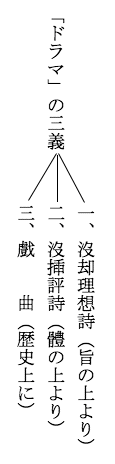

| 柵草紙の山房論文 | |
| 森 鴎外 | |
| (2015) | |
柵草紙の山房論文
森鷗外
我に問ふ、何故
に久しく文を論ぜざるかと。我は反問せむとす、何故に久しく論ずべき文を出
さゞるかと。我が文學上の評論をなさんといひし誓
は、今やいたづら事になりなむとす。其
咎
果して誰
が上にか歸すべき。
露伴子
はその著當世外道
の面に於いて、柔弱者の口を藉
りて我に戲れていはく。鷗外は技術論者にして、唯
學校教師たるに適すと。是言
善
く我
病
に中
れり。然
れども今の世のありさまは、文を論ずる人に理を説かしむるを奈何
せむ。こはわれ一人の上にはあらじ。
近刊の新聞雜誌中、論ずべき文少からざるべし。我眼豆の如く、葡萄
の如くにして未だこれを發見せず。幸
に今人が文を論じたる文數篇を獲
たれば、一日千朶山房
に兀坐
して、聊
又これを論ず。
小説三派（小羊漫言七一面より）及梓神子
（春廼舍漫筆一五一面より）
さきにわれ忍月
、不知庵
、謫天
の三人を目して新文界の批評家とせしことあり。當時は實に此
三人を除きては、批評を事とする人なかりき。去年より今年（明治二十四年）にかけては、忍月居士
の評漸
く零言瑣語
の姿になりゆき、不知庵の評は漸く感情の境より出でゝ、一種の諦視
しがたき理義の道に入りはじめたり。獨
り謫天情仙
のみ舊に依
りて、言ふこと稀
なれども、中
ること多からむことを求むるに似たり。この間別に注目すべき批評家二人を獲
つ。そを誰
とかする。逍遙子
と露伴子と即
是
なり。並
に是れ自ら詩人たる人にしあれば、いづれも阿堵中
の味えも知らざる輩
とは、日を同うして論ずべからざる由
あらむ。われ固
より善詩人は即好判者なりといふものならねど、自ら經營の難きを知るものは、猥
に杓子定規
うち振りて、枘鑿
その形を殊
にして、相容
れざるやうなる言をばいかゞ出さむ。二子の文を論ずるや、その趣相距
ること遠けれど、約していへば、逍遙子は能
くものを容れ、露伴子は能くものを穿
つ。左に少しく逍遙子が批評眼を覗
かむ。
逍遙子の評能くものを容るとは何の謂
ぞ。答へていはく。批評眼も亦
哲理眼なり。人ありて哲學の一統
を立つるときは、その時の人智の階級にて、及ばむ限のあらゆる事物は、合して一機關をなし、其理の動くところ、悉
く其
源
に顧應せでは協
はじ。批評も亦然
なり。能くものを容るゝ批評は、其標準の完美なること想ふに堪へたり。劉海峰
のいはく。居高以臨下
。不至於爭
。爲其不足與我角也
。至於才力之均敵
。而惟恐其不能相勝
。於是紛紜之辨以生
。是故知道者
。視天下之岐趨異説
。皆未甞出於吾道之外
。故其心恢然有餘
。夫恢然有餘
。而於物無所不包
。蓋
逍遙子が能くものを容るゝは、その地位人より高きこと一等なればなるべし。
逍遙子は演繹
評を嫌ひて、歸納評を取り、理想標準を抛
たむとする人なり。然れども子も亦我を立てゝ人の著作を評する上は、絶て標準なきこと能
はじ。われ其小説三派及梓神子
をみて、その取るところの方鍼
を認めたり。
逍遙子の小説三派とは何をか謂ふ。其一を固有派又主事派又物語派と名づけ、次を折衷派又性情派又人情派と名づけ、末なるを人間派と名づく。
固有派は事を主とし、人を客とし、事柄を先にし、人物を後にす。主人公をば必ずしも設けず、たま〳〵これを設けても、事の脈絡を繫
がむ料にしたるのみ。されば大かたの事變は、主人公の性行より起らしめずして、偶然外より來らしむ。是
に於て人物は客觀なり。此派の作者は俗にいへる三世因果の説を理想とし、若
くは天命の説を理想とするなり。我
曲亭、種彦
などに此流義ありて、外國にては、中古の物語類はいふも更なり、スモオレツト、フイヽルヂングなど此派に屬し、スコツト、ヂツケンスといへども間々これに近し。此派は人に配すれば支體の如く、畫
に配すれば文人畫の梅の如く、學問に配すれば常識の如し。
折衷派は人を主とし、事を客とし、事を先にし、人を後にす。人を主とすとは、人の性情を活寫するを主とする謂
にて、事を先にするは、事によりて性情を寫さむとすればなり。此派にては人物は主觀なり。但し事と人との間には、主客後先あるのみなれば、人物必ず主觀なるにはあらず。サツカレエなど此派に屬したり。スコツト、ヂツケンス等は固有派と此派との間に跨りたり。物に譬
へていへば、人に配して五感の如く、畫に配して一枝の梅の密畫の如く、學問に配して理學の如し。
人間派は人を因とし、事を縁とす、その因とするところは人の性情にして、その縁とするところは事變なり。此派の小説にては、先づ人を因とし、事を縁として一果を寫し、この果若くは他の事變をも合せて縁として更に一果を寫し、其果若くは他の新事件をも合せて縁として更にまた一果を畫き、終に大詰の大破裂若くは大圓滿に至りて休
む。ギヨオテ、シエクスピイヤの如し。近世の魯獨
などに此派多し。物に譬
へていはむは、人に於ては魂の如く、畫に於ては油畫の梅の如く、學問に於ては哲學の如し。
以上は逍遙子が小説三派の差別なり。あはれ此けぢめをばいしくも立てつるものかな。今の文界に出でゝ、小説の派を分たむとせしもの多しといへども、何人か能くそが右に出でむ。われ嘗
てゴツトシヤルが詩學に據
り、理想實際の二派を分ちて、時の人の批評法を論ぜしことありしが、今はひと昔になりぬ。程經て心をハルトマンが哲學に傾け、その審美の卷に至りて、得るところあるものゝ如し。その頃料らずも外山正一氏の畫論を讀みて、我
懷
けるところに衝突せるを覺え、遂
に技癢
にえ禁
へずして反駁
の文を草しつ。かゝればわれはハルトマンが審美の標準を以て、畫をあげつろひしことあれども、嘗て小説に及ばざりき。今やそを果すべき時は來ぬ。いで逍遙子が批評眼を覗
くに、ハルトマンが靉靆
をもてせばや。
夫
れ固有と云ひ、折衷と云ひ、人間と云ふ、その義は皆ハルトマンが審美學の中に存ぜり。今多くその文を引かむもやうなし。唯
爰
にハルトマンが哲學上の用語例によりて、右の三目を譯せば足りなむ。固有は類想
なり、折衷は個想
なり、人間は小天地想
なり。
逍遙子のいはく。固有派にては、甲人に於ける天命も、乙人に於ける天命も、汎然
漠然
として一なるが如く、平等の理はあれども、差別の實なし。死したる概念はあれども活きたる觀念はなく、「ゼネラリチイ」はあれども、「インヂヰヂユアリチイ」はなし。所謂
固有派の死したる概念を具ふるところ、「ゼネラリチイ」を存ずるところ、これをこそハルトマンは類括の意を取りて類想と名づけたるなれ。折衷派にいたりては、逍遙子活きたる觀念ありといひ、「インヂヰヂユアリチイ」ありといふ。是れハルトマンが個々の活物の意を取りて個想と名づけたるものにあらずしてなにぞや。所謂人間派に至りては、人事の間に因果現然として、個人を寫すは是れ個人のために寫すならず、寫すところは捕來
たる個人の不朽の象なり。この象や露伴子の所謂靈臺の眞火、宇宙の命根の聖火と相觸着して、以て一條の大火柱を成せるところに生ず。（美術世界の題言）ハルトマンが個物の能く一天地をなして、大千世界と相呼應するところより、小天地想と名づけしは是なり。
然はあれど固有、折衷、人間の三目は逍遙子立てゝ派となしつ。類想、個想、小天地想の三目は、ハルトマン分ちて美の階級としつ。二家はわれをして殆
岐に泣かしめむとす。
ハルトマンが類想、個想、小天地想の三目を分ちて、美の階級とせし所以は、其審美學の根本に根ざしありてなり。彼は抽象的
理想派の審美學を排して、結象的
理想派の審美學を興さむとす。彼が眼にては、唯官能上に快きばかりなる無意識形美より、美術の奧義、幽玄の境界なる小天地想までは、抽象的より、結象的に向ひて進む街道にて、類想と個想（小天地想）とは、彼幽玄の都に近き一里塚の名に過ぎず。
ハルトマンのいはく。類想の鑄型
めきて含めるところ少く、久く趣味上の興を繫ぐに堪へざること、眞の美の僅
に個想の境に生ずることをば、今や趣味識の經驗事實なりといひても、殆
反對者に逢はざるべし。類想の模型には盡くる期あり。後れて出づる美術家は樣に依りて胡盧
を畫くことを免れず。（審美學下卷一八七面）ハルトマンは類想を卑みて個想を貴みたり。
ハルトマンのいはく。個物には階級あり。高下一樣ならず。その最
低きものと最
高きものとは、人の觀念の及ばざるところなれば、個物を見るごとに、これより高きものなきことなく、又これより低きものなきことなし。個物は高しといへども類にあらず。個物は具實せるものにて、類は抽象したるものなり。最高最下の間なる個物は、おのれより下れる個物を包みて肢節
とすること、大天地想の世にありとあらゆる個物を包みて肢節とする如くなり。彼は梯
を隔てゝ大天地を望めり。されば個想は絶對結象の想にあらざるゆゑに分想
なれども、又小天地の完想として見らるべし。（同上一九五面）ハルトマンは眞の個想を、おのづから小天地想たるべきものと看做
したり。蓋
人事の間に後先ありて因果なきは、因果なきにあらず、因果のいまだ充分にあらはれざるものにて、小天地想ならざる個想は、即是れいまだ至らざる個想ならむのみ。
逍遙子とても、固有、折衷、人間の三目を立てゝ流派とせしは、あながち尊卑を其間に置かざりしにはあらざるべし。折衷派だに稀なる今の我小説界にて、人間派を求めむは、文學に忠誠なる判者の事にあらずとやうに、時の務
をおもひて、迂濶
なる批評家をおどろかさむとしたる蹟
、歴々として見ゆるならずや。
されば逍遙子が類想、個想、小天地想といふ美の三級を藉
りもて來て、今の文界の衆生
のために、盛
に小乘を説きしは、おそらくは是れ作者あはれとおもひてならむ、批評家憎しとおもひてならむのみ。逍遙子は類想の固有派、個想の折衷派、小天地想の人間派の別を立て、さて獅子吼
をなしていはく。此別を非なりとする人あらむ乎
。其人は事物の平等を見て、差別を見ざる人なり。世に絶對あるを知りて、相對あるを知らざる人なり。一あるを知りて、萬億あるを知らざる人なり。國家あるを知りて、われあるを知らざる人なり。我あるを知らざるは死せるなり、死灰なり。現
に類想、個想、小天地想の別だに知らで、批評の業に從ふ輩
は、かく叱咜
せられむも可なるべし。然れども彼三派に優劣なしと見よといはばいかに。
逍遙子は類想派は常識の如く、個想派は理學の如く、小天地想派は哲學の如くなりといへど、若
譬
を進めて、哲學は科學の親なるゆゑに、小天地想派は常に個想派に優れり、常識は科學の材たるに過ぎねば、類想派は最下なりといはゞ、大
なる僻事
ならむといへり。われおもふに恐らくは然らず。哲學は科學の親なる如く、個想に小天地の義あり。ダルヰン、ハツクスレエが説、謬妄
哲理に優りたるはダルヰン、ハツクスレエが説の中に世界の眞理あればなり。謬妄哲理の彼等が歸納説に及ばざるは、その謬妄なるためにて、苟
くも近世の哲學統といはれむ程のものは、ダルヰン、ハツクスレエが説をも容れざるべからず。（ハルトマンが「ダルヰニスムス」の論を見よ）類想の卑
きは模型に盡くる期ありといひしハルトマンが言を見ても知るべからむ。逍遙子は想に縁
りて派を立て、これを梅櫻の色殊
なるに比べ、類想派の作家に向ひて、個想派の作を求めむは、ふりたる梅園に向ひて其花の櫻ならざるを笑ふ如しといひ、今の批評家を烏許
の風流雄なりといへり。夫れ逍遙子が一味の雨は、もろ〳〵の草木を沾
すに足りなむ。然れども類想と個想との別はおそらくは梅と櫻との別に殊
なるべし。花に譬へていはゞ、類想家の作も個想家の作も、おなじ櫻なるべけれど、かなたは日蔭
に咲きて、色香少く、こなたは「インスピラチオン」の朝日をうけて、匂
ひ常ならぬ花の如しとやいふべからむ。日蔭に生
ふる櫻に向ひて、色香深き花を求めむは無理ならむ。その花の色香少きを評せむは、必ずしも無理ならじ。逍遙子は嵐
に似たる批評家の花に慈
ならざるを怪めども、われは逍遙子が花に慈なるに過ぎて、風を憎むことの太甚
きを怪めり。若批評の上に絶て褒貶
なかりせば、我文界はいとゞ荒野とやなりなむ。
逍遙子は我文界に小天地想の人間派なきを認めき。（我國はいまだギヨオテ、シエクスピイヤを出さず）逍遙子は我舊作家を以て類想の固有派に屬せりとなし、我新作家を以て未だ至らざる個想の折衷派となしつ。われは此評の殼を嚙碎
きて、其肉の甘さと其核
の苦さとを味ふ。人間派なきは大詩人なきなり、妙手なきなり。舊作家の固有派に屬するは、其凡手なるためなり。新作家の折衷派に屬するは、其小家數たることを免れざるためなり。かの不知庵のあるじが如く、今の我國の小説家には、等級ありといへばえに、言はずして流派を立てつるは逍遙子なり。具眼の人誰かこの肉中の核を認めざらむ。
或
ひとのいはく。逍遙子はげに今の我文界に人間派なきを認めき。されど其言にいはずや。嘗て「ミツドル、マアチ」を見しに、ジヨルジ・エリオツト女史が作に人間派の旨に愜
へるところあり。其外にもおなじ派を汲
む人ありや知らねど、英國にての人間派詩人はこれのみならむも計り難かり。夫の近世の魯獨にこそ人間派の小説家も多しとは聞きつれ。そもいと近きほどの事なり。又佛蘭西
なる諸作家バルザツク、ユウゴオ、ゾラ、ドオデエの徒は、或は人情派の界
を超えて、人間派に入れりともいふべからむが、これとてもまた近世の作家なり。詮ずるところ人間主義の小説界に入りしは、十九世紀に於ける特相といふも誣言
にあらじ。尚
いと穉
きほどの顯象なり云々。是れ人間派は新きものにて、漢學者若くは御國まなびせし人の小説家になりたるに向ひて、人間派に入れといはむことの理なきを明にしたるにあらずや。こはまことに其故ある事なり。然れども逍遙子は別に世相派といふものを立てゝ、これにホオマアを算したるなり。彼
の漢學者若くは國學者たる小説家に對して求むべきは、此種叙事詩の大作なるべし。これその推理上能くすべきものなればなり。又東洋に個物主義
なしといはむか、これは屢聞えし説なり。ヨハンネス・シエルいはく。東洋戲曲の最偉なるは印度詞曲なれど、印度詞曲の雄は、遂に此詩體の質を知らざりき。蓋戲曲の質は、個人がみづから自在にものを定むる性より生ず。惜むらくは東洋の靈魂は、かゝる個物主義を得るに至りしこと、絶てなかりき。（世界文學史一の卷一七面）是れ東洋に個想なかりきといふ説の一例なり。吾邦の詩人には果して眞に個想なかりしか。ギヨオテ、シエクスピイヤが詩に見えたる如き個想なかりしか。若無くば、小天地想を美の極意とする立脚點より見て、吾邦古來大詩人なしといはむのみ。世の批評家に大和魂
ありて、古來なかりし大詩人を今の文界に求めむとせば、われ唯これを壯なりといはむ。
小説三派の外、逍遙子は別に詩の二派を立てたり。其一を叙情派又理想派といひ、其二を世相派又造化派といふ。
叙情派は理想を宗とす。理想とは心の世界なり、虚の世界なり。此派の詩人は我を尺度として世間を度
る。彼は理想の高大圓滿ならむことを望み、自家の極致の其作の中に飛動せむことを期す。其小なるや、一身の哀歡を歌ふに過ぎざれども、其大なるや、作者乾坤
を呑
みて、能く天命を釋
し、一世の豫言者たることを得べし。其さま猶
雲に冲
る高嶽
のごとく、彌
高うして彌著
し。其さまは又猶萬里の長堤のごとし。遠うして更に遠しといふとも、詮
ずるに踏破しがたきにあらず。ダンテ、マアロオ、ミルトン、カアライル、バイロン、ヲオヅヲオス、ブラウニング等は家數に大小ありといへども皆叙情詩人なり。
世相派は自然を宗とす。自然とは物の世界なり、實の世界なり。此派の詩人は我を解脱
して、世間相を寫す。その望むところは、作者の影空くして、ひとへに世態の著からむことなり。其小なるや、管見の小世態を寫すに止まれど、其大なるや、能く造化を壺中
に縮めて、鎭
に不言の救世主たらむ。其状猶邊なき蒼海
のごとく、彌大にして彌茫々
たり。又猶底知らぬ湖のごとし。深うして更に深く、遂に其底を究
むべからず。ホオマア、シエクスピイヤ、ギヨオテ、スコツト、エリオツト等は、家數の大小こそ相殊なれ、此派の詩人なり。
逍遙子が叙情、世相の二派は、ハルトマンが審美學上、叙情詩、叙事詩の二派に當れり。
ハルトマンのいはく。叙情詩は客觀の相に勝ちたる主觀の情を以てその質とす。その客觀の相を捕來るは、感情の主觀を高うもし、深うもせむとてのみ。（下卷七四五面）是れ豈
逍遙子が所謂、我を尺度として世間を度
るところにあらずや。
又いはく。叙事詩は客觀相を以て、その偏勝の質とす。その主觀の情は、唯半
掩
はれてかすかに響きいづるのみ。（同所）是れ豈逍遙子が所謂、我を解脱して世間相を寫すものにあらずや。
ハルトマンは此二門の外に、戲曲門 Dramatik を立てゝいはく。叙情詩にては、主觀の情、客觀の相に勝ち、叙事詩にては、客觀の相、主觀の情に勝ちたれども、戲曲に至りては、情と相との平均を取戻さむとす。さればヘエゲルが審美學にて、戲曲は叙情、叙事の二門にて偏勝したる兩義を合併したりといへる、固より善し。唯キルヒマンが戲曲の叙情、叙事の二詩門に殊なるは、場に上せて興行すべきところにありといひしも、亦未だ嘗て善からずばあらず、（同所）逍遙子が「ドラマ」はこれに殊なり。固有、折衷、人間の三派を分つときは、人間派を以て、最狹き意義にていふ「ドラマ」の結構とす。これに對する叙事詩は固有派に屬し、折衷派は「ドラマ」と叙事詩との界に立てり。その叙事詩となるは、事を先にすること甚きときにして、その「ドラマ」となるは人を主とすること重きときなり。又叙情、世相の二派を立つるときは、世相詩人を以て「ドラマチスト」とし、以て叙情詩人の「リリカル、ポエト」に對したり。人間派の旨、若小天地想に在らば、是れ叙情詩、叙事詩、戲曲の三門を通じて求めらるべきものなれば、われこれに配するに「ドラマ」を以てせむことを欲せず。彼客觀相をして偏勝せしむる世相詩人の作、即沒主觀情詩（梓神子にいはゆる沒理想詩）は、もとより相と感と並び至らむことを望める戲曲にあらざれば、これを「ドラマ」といはむも亦願はしき事にあらじ。
因
にいふ。國會文苑に出でし戲曲論中、戲曲の標準の條にて、忍月居士は逍遙子の所謂「ドラマ」をさながらに戲曲のことゝ看做
して反駁を試みつ。こは逍遙子が言に、今の批評家狂言作者に向ひて「ドラマ」を求むるは底事
ぞとありしに据
りたるなるべし。されど逍遙子が所謂「ドラマ」には、單に戲曲といはむよりは廣き義あり。忍月居士はそを認めざりしにや。
逍遙子が叙情、世相の二派、ハルトマンが叙情詩、叙事詩の二門に當れることは既にいひき。然れども更に其區別の立てかたをとみかうみるに、いまだ其義を悉
さゞるところあらむを恐る。われ思ふに所謂叙情と世相との目には、別に普通の意義にて理想、實際の兩語に當れるところあるべし。
ゴツトシヤルのいはく。造化を模傚
し、實を寫すことより出づるを實際主義といひ、理想の世界、精神の領地より出づるを理想主義といふ。（詩學上卷九九面）是れ逍遙子が所謂自然を宗とする世相派と理想を宗とする叙情派とに通へり。又いはく。實際主義に偏したるものは、心なき造化を宗としたる美術品を得べく、理想主義に偏したるものは、造化なき心を宗としたる美術品を得べし。（同所）是れ逍遙子が所謂管見の小世態を描くものと、一身の哀歡を歌ふものとに近し。
ハルトマンは理想派、實際派の別を認めず。彼は抽象を棄てゝ結象を取り、類想を卑みて個想を尊めり。嘗て美術の革命を説いていはく。革命者實際主義といひ、自然主義といふものを奉ずるは、其假面のみ。自然には個物ありて類なし。この故に美術を以て模傚となすは、固より謬見なれど、其謬見中にては自然を模傚せむとするこそ抽象したる類型を模傚せむとするに優りたれ。類には實なくして個物には實あり。この故に極致をみだりなりとして、實を美術の材にせむとするものは、おのづから類想を遠離
りて個想に近寄らむとす。革命者の勢力は其源、小天地想に在り。その妄なりとして棄てし極致は類の極致のみ。革命者は類の極致の外、別に個物の極致あることを知らざるなり。美は實を離れたる映象なれば、美術に實を取らむやうなし。想の相をなすとき、實に似たることあるは、偶然のみ。個物の美、類の美より美なるは、實に近きためにあらず。實の美なること類美の作より甚しきは、實の結象したる個物に適へること作に勝りたればなり。（審美學下卷一八八及一八九面）
われおもふに所謂理想主義を叙情詩の門の專有に歸し、所謂實際主義を叙事詩の門の專有に歸する如きは恐らくは妥
ならざる論ならむ。理想主義の類想を宗とする弊、實際主義の個想を宗とする利、いづれも叙情詩、叙事詩、戲曲の三門を通じて見るべきものなり。おもなる事を少し擧げて、詩の映象躍如
たる理想主義の利と、瑣事
を數ふること多くして聽者を倦
ましむる實際主義の弊とも亦然なり。（下卷七一八面）逍遙子がホオマア、シエクスピイヤ、ギヨオテの三家を世相派の實際主義を秉
るものに列せしは、ゴツトシヤルがおなじ三家にジヤン・ポオルを加へて實を役する理想主義、即ち眞の實際主義を秉るものとせしと、殆符節を合する如し。（詩學上卷一〇二面）若實際主義にして叙事詩の門の專有に歸すべきものならば、此群に入りたるギヨオテは、ここに洩
れたるシルレルなどより立超えたる叙情詩の大家たらむ樣なかるべきをや。（姑
くフイツシエルに據る、審美學三の卷一三五二面）
逍遙子は叙情、世相の二派を立てたる標準を以て、我國の節奏文を批評し、上は短歌、長歌より下は連歌、俳諧
、謠曲、淨瑠璃
に至るまで、（淨瑠璃のある部分を除く外は）おほむね理想詩（叙情派）に屬すといひて、世相派の詩少きを歎
きつ。こゝに所謂理想詩をば、類想詩と解しても善かるべく、又（謠曲、淨瑠璃をも除かば）叙情詩と解しても善かるべし。
因
に云ふ。逍遙子が梅花道人を樂天詩人なりとせしは面白し。ハルトマンが詩統よりいひても、梅花道人が詩は慥
かに樂天詩なるべし。上に詩統の略圖を示せり。
又云ふ。忍月居士はみづからハルトマンを祖述すと稱しながら、小説三派及梅花詞集評を讀みしときは、忽
認めて人と事とにおなじおもさをあたふるものとなし、（國會、人物と人事）忽又認めて事を從とし、人を主とするものとなしつるのみ。（同新聞、人物、人事に就きて逍遙先生に寄すと題したる文及此頃の文學界）かくてなほハルトマンを祖述すといはむはいとなん影護
かるべき。
逍遙子が前の三派、後の二派に就きては既に論じ畢
んぬ。これよりは其批評の標準を措いて、其批評の手段に及ばむ。
逍遙子おもへらく。批評は著作の本旨の所在を發揮することをもて專とすべし。歸納的なるべし。沒理想的なるべし。モオルトンが唱ふる如く、科學的なるべし。標準に拘泥
することなかれ。手前勘の理想を荷
ぎまはることなかれ。嗜好
にあやまたるゝことなかれ。演繹的なることなかれ。芋蟲一疋を解剖するにも、人間を解剖するにおなじく、其間に上下優劣をおかぬ動物學者の心こそ頼もしけれ。批評とはもと褒貶
の謂
にあらず。
こは實に今の批評家の弊を撓
むる論なり。唯夫れ弊を撓むる論なり。かるが故に寖
偏なるにはあらずやとおもはるゝふしなきにあらず。凡
そ世の中にて、觀察
と云ひ、探究
と云ふ心のはたらきには、一つとして歸納法の力を藉
らざるものなし。人の著作を批評せむとするときも、先づ觀察し、探究せではかなはじ。是れ科學的手段なり。是れ歸納的批評なり。然
はあれど觀察し畢り、研究し畢りて判斷を下さんずる曉には、理想なかるべけむや、標準なかるべけんや。理想とは審美的觀念なり。標準とは審美學上に古今の美術品をみて、歸納し得たる經驗則
なり。唯
哲學者は經驗則を經驗則として應用せず、これをおのが哲學統裡に收めたる上にて活かし使はむとするのみ。審美的觀念は拉甸
人が爭ふべからぬものと定めし一人々々の嗜好にあらず。學問上にあきらめ得たる趣味なり、「エステジス」なり。拘泥すればこそ標準を憎め。手前勘なればこそ、杓子定規なればこそ理想を厭
へ。蠋
を昆蟲なりといひ、拙
き小説家を固有派なりといふときは、其際におのづから褒貶存ず。是れ演繹的批評ならざらむやは。
逍遙子又いへらく。批評家は猶植物家の植物を評する如く。動物家の動物を評する如く、理想を離れて其物を評すべしといふのみなり。それの某
は世に益あり、又は益なしといふは、當世又は未來世に對しての評判なり。これは科學的批評にあらずして、實地應用批評などゝいふべし。純粹評判と應用評判とは殊なり。
これも亦今の批評家の弊を撓むる論なり。その偏なるが如き迹あることは、上の歸納、演繹の辨におなじ。われおもふにおほよそ世の中に、用と無用との別ほどむづかしきものはあらじ。物物而責之用
、用亦窮矣
と東坡
外傳の首
に題せし西疇子
が言もおもはるゝは、二三の新聞の文學を視るこゝろの狹さなり。文學國を滅ぼすといふものあり。（讀賣）文士は樂隊の如し、事あるときは何の用をもなさずと罵るものあり。（中新聞）美を度外に視ること能はざる人性を知らず、趣味の高卑より國民の文野分るゝことを知らぬ人々なればこそ、かゝる決斷をなすならめ。如法
これ等の輩に向ひては、應用評判を斥
けて、純粹評判を勸むる逍遙子が言、大に開發の功を秦するなるべし。然はあれど必ず用を問はじといふも科學的手段を講ずるものゝ迷ならまし。動植をきはむる學者の心は、世の常の用をばげに問はざるべけれど、進化説を唱ふる人は、微蟲を解剖するときも、おのれが懷
ける説の旨に愜
はむことを願はざるにあらず。唯科學の公心あるをもて、預期せしところに反せし事實をも、言はで止むごときことなからむのみ。生物の最微なるを細菌とす。世界第一の細菌學者コツホはつねに其徒に誨
へていはく。利害なき細菌を取りて、一々種を定め名を命ぜむはいともおろかなるべしと。されば膠中
に栽ゑたるとき、紫色を見する水中の細菌、立派なる拉甸
名を得たるは、利害なき中にても、その紫の色に出にければなりかし。今の小説界に入りと入りぬる人の作を取りて、一々蠋を解く勞を取らむこと、さりとては難義ならむか。われは逍遙子が縱令
その量をせばめずとも、少しく用の有無を顧み、利害なき「バクテリヤ」を措
いて、蝶になるべき蠋を取り、再びは世の無頼子に牛刀鷄を割く（文苑）といはれざらむを望む。
逍遙子はまた世の批評家が二千餘年前に死せし人の肋骨
を息杖にして、アリストテレエスなどが言を引用ゐるを笑ひき。こは眞の卓見なり。然はあれど審美學の道理には、アリストテレエスが詩學にて早くも充分に發揮せられたるものなきにあらず。レツシングがハムブルクにありて、二千零八十九年前に死せしアリストテレエスを引きけむも、吾人が今年の文界に立ちて、二千二百十三年前に死せしアリストテレエスを引かむも、おそらくは大なるけぢめなかるべし。支那學者が道徳を説きて、いつも先王の道といふを笑ふものはさはなり。されど獨逸
の民がいまもユスチニヤンの法典を參考律
にするを笑ふを聞かず。是れ識者のつら〳〵慮
るべきところなり。モオルトンはげに新なるべし。セント・ブウウはげに近かるべし。されどアリストテレエスも廢つべからず。
自ら註す。梓神子の取次の翁が言を、直に逍遙子が言とせしを疑ふ人もあるべし。されど作家が言と作家が其作中の人にいはしむる言とは、時ありて大差なきをば、フイツシエルも斷言せしことあり。（流俗及褻語
一四七面）況
や逍遙子はさゝのやみどりに對して、わが批評に關しての意見は、近頃の讀賣新聞に、戲文もてほゞいひ顯しおきぬといひしをや。（文苑、明治二十四年九月）
（明治二十四年九月）
逍遙子この頃記實家となりて時文評論を作る。時文評論とは早稻田文學の一欄にして、現實を記するを旨とするものなり。逍遙子は何故に記實家となりたるか。曰く談理を嫌
ひてなり。逍遙子は何故に談理を嫌へるか。曰く理の實より小ならむことを慮
りてなり、理想世界の現實世界より狹からむことを思議してなり。その言にいへらく。今の談理家の言ふところは空漠にして、その見るところは獨斷に過ぎず。今の談理家はおの〳〵おのが方寸の小宇宙に彷徨
逍遙して、我が思ふところのみを正しとし、これを尺度として大世界の事を裁斷せんとす。そのさま恰
も未だ巨人島にわたらぬガリワルの如く、また未だガリワルを見ざる「リリピユウシヤン」の如く、豕
を抱いて臭きことを忘れ、古井の底に栖
みて天を窺
ふ。かゝる小理想家の説くところ何のやくにか立たむと。
逍遙子はかく理を談ずることを斥けたり。されどその理を談ぜざるは、談ぜざるを以て談ずるなり。その作るところの時文評論は評論にあらざる評論たらむとす。その人を教ふる手段にいはく。我は實を記して汝
に歸納の材を與ふ。汝が眼、汝が心はおのづからこれを歸納して、明治文學の活機を悟り、以て明治文學大歸一大調和の策を立てよ。汝の機を悟り策を立つることを得るに至るは、或は遲からむ。そは我手段の劇藥ならざるためなり、持藥たるためなりと。
時文評論を讀む人は、いづれの處よりか此大歸納力を得來たるべき。いはく心中沒理想これなり。時文評論を書く人は、いづれの處よりかその大記實法を得來るべき。いはく常識これなり、常見これなり。
常識、常見の何物なるかは、よくも知らず。逍遙子はたゞ「コンモン、センス」といふ一英語を示しゝのみなればなり。沒理想の何物なるかはシエクスピイヤ脚本評註の緒言に見えたり。その言にいはく。進化は無心なり。自然は善惡のいづれにも偏
りたりとは見えず。固より意地わるき繼母の如きものとも見えねば、慈母とも見えず。さるに數奇失意の人は造化を怨み、自然を憤りて、此世を穢土
と罵
り、苦界と誚
るなり。さて亦得意の人はこれに反して造化を情深き慈母のやうにおもひて、此世を樂園とおもへり。必竟
人々の思做
し次第にて、苦とも樂とも見らるゝが自然の本相なり。此故に造化の作用を解釋するに、彼宿命教の旨を以てするも解し得べく、又耶蘇教
の旨を以てするも解し得べし。其他老、莊、楊、墨、儒、佛若くは古今東西の哲學者がおもひ〳〵の見解も、これを造化にあてはめて、強
ち當らざるにあらず、否、造化といふものは、此等無數の解釋を悉
く容れても餘あるなり。祇園精舍
の鐘の聲、浮屠氏
は聞きて寂滅爲樂の響なりといふべきが、待宵
には情人が何と聞くらむ。沙羅雙樹
の花の色、厭世の目には諸行無常の形とも見ゆらむが、愁
を知らぬ乙女
は何さまに眺むらむ、要するに造化の本意は人未だこれを得知らず、只おのれに愁の心ありて秋の哀
を知り、前に其心樂しくして春の花鳥を樂しと見るのみと。
造化既に沒理想なり。造化に似たる沒理想の詩を作るものは大詩人なるべし。こゝに於いてや人にはシエクスピイヤを取り、體には「ドラマ」を取る。シエクスピイヤがバイロン、スヰフトより大なるは彼は理想なく、此はおのが理想をあらはせばなり。「ドラマ」の小説より全きは、彼は理想なく、此は作者の理想を含みたればなり。作者能く理想なきに至るときは、人に神の如くにもおもはれ、聖人の如くにもおもはれ、至人の如くにもおもはるべし。近松も沒理想なり。彼も境遇次第にては、たとひシエクスピイヤには及ばずとするも、我國の淨瑠璃作者にて終らむよりは逈
に優りたる位地に上りぬらむ。「キング、リヤア」の悲劇は馬琴の作に似て勸懲の旨意いと著
く見えたれども、作者みづからが評論の詞、絶えて篇中になきゆゑ、見るものゝ理想次第にて強
ち勸懲の作と見做すを要せず、別に解釋を加ふること自在なり。然るに曲亭の作を見れば、例へば蟇六
夫婦の性格の如き、頗
る自然に似て活動したれども、作者叙事の間にて明
に勸懲の旨なりといへれば、人も亦これを沒理想と評すること能はずと。
夫れ造化既に沒理想なり、作者と詩と皆沒理想になりたれば、逍遙子が沒理想の時文評論を作れるも宜
なり。世の批評家はおほしといへども、逍遙子がこたびの大議論を聞きては、皆口をつぐんで物言はず。偶々
物言ふ人ありといへども、唯賞讃のこと葉を重ねて、眞價を秤らむとするに至らず。（青年文學第一の成語）平生批評を專
にせざる人々の中には、多少これに對して意見を述べたる人ありといへども、大抵片言隻句
にして、人の心をあかしむるに由なし。おのれも大同小異の見を懷いたれば、自然、沒理想の論に少からぬ同意を表したしといふは美妙齋なり。（國民新聞）讀者の沒理想をたのみて、時文評論を評論ならぬ評論となし、記實となすと聽きて、これに服したるは漣
山人なり。（讀賣新聞）シエクスピイヤを沒理想とする論、若し逍遙子が獨造の見ならば、これを歐文に譯して歐人に見せまほしといふは抱一庵主人なり。（報知新聞）この三人はおもなる讃者なるべし。撫象子のいはく。シエクスピイヤが理想はいと大きやかなりしを見て、沒理想なりといふは誤なり。シエクスピイヤは豫言者なりき。豫言者とは大理想家をいふなりと。（女學雜誌第二九〇號）これを一人の難者とす。不知庵主人のいはく。沒理想は極めて好文字なり。然れども春の屋は沒理想といふ理想を立てたるなり。是れ或
は眞理に近からむかは知らねど、われ未だ遽
に同意することを得ずと。（國民新聞）これを一人の蜘蟵者
とす。實を記して評論に代ふる逍遙子が趣意に漣山人の服せしを、特書して表
しいだしゝ正直正太夫といふものあり。（國會）これを一人の傍觀者とす。
こゝに烏有
先生といふ談理家ありけり。理を談ずることを旨とする一大文學雜誌を發行せむとおもへども未だ果さず。烏有先生は何故に談理家となりぬるか。曰く記實にあかでなり。烏有先生は何故に記實にあかざるか。曰く萬有と萬念と一に歸せしむべきことをおもひてなり。造化の無理性にしてまた有理性なるを思議してなり。その言にいへらく。物に逢ひて美を感じ、物を造りて美をなす。是れ評者と作者との境界なり、美術の境界なり、文學の境界なり。美はこれを拆いて繁き意義となし、これを統べて深き考思となすべし。羅馬
なる聖彼得寺
塔を觀てミケランジエロが作りし雛形
の美に驚くは、建築を視る眼あるものゝ皆能くするところなるべし。これを美なりと記
さば、記實者の役濟むべけれど、談理者はそれにて足れりとすべからず。かの佛朗西
人それがしが如く、高等靜論
の算法によりて古人が不用意にして靜性
の極處に至れるを看破してこそ、その美なる所以を知るべきなれ。ライプニツツが樂調の美を知るを無意識中の算術といひしもおなじ談理の境なり、若し美の義
を碎いて理に入る
ことあらずは、審美學は起らざるべし。まだ巨人島を見ざるガリワルが實を知ることの小なるはまことにをかしかるべけれど、いまだ理に通ぜざるために論理
をあやまりたる批評をなす人あらば、これも可笑しからむ。逍遙子が記實の文を讀むには、大歸納力を具へざるべからず。烏有先生が談理の言を聞くには、當りまへの理解力を備ふるのみにて足れり。
烏有先生は逍遙子が常識を貴むを聞きて、これを難じていはく。シヤフツベリイが内官論はふりたり。リイドが常識も今の哲學の程度より見るときは、おそらくは取るに足らざるべし。蓋常識は凡識と相隣せり。變を斥
くるはよけれど、非凡を容れざるはわるかるべし。國利民福をもとむる便
を知らむとならば、政治家として常識を説きても善かるべく、經濟家として常見を唱へても善かるべけれど、常識は基督
を生ぜず、常見は釋迦
を成さず、「コンモン、センス」の間には一個の大詩人を着くべきところだにあらざるべしと。
烏有先生はまた逍遙子が沒理想の論を駁していはく。世界はひとり實
なるのみならず、また想
のみち〳〵たるあり。逍遙子は沒理性界（意志界
）を見て理性界
を見ず。意識界
を見て無意識界を見ず。意識生じて主觀と客觀と纔に分かるゝ所以をおもはず。老、莊、揚、墨、孔丘、釋迦、其他古今の哲學者が觀得
たる世界を小なりとして、自ら片輪なる世界を造らむは果敢
なきすさみならまし。後天にのみ注げる眼はダルヰンが論を守りても事足るべけれどそれにて造化は盡されず。棘
は誰か磨き成したる。羽は誰か畫
き成したる。棘の同じさまなるは姑く置かむ。孔雀の羽のいろ〳〵はその翰
より受くる養
おなじきに、色彩の變化は一本
ごとに殊なり。その相殊なる色彩の合
して渾身の紋理をなすは、先天の理想にはあらざるかと。
烏有先生既に理性界を觀
、無意識界を觀て、美の理想ありといひ、又これに適へる極致ありといへり。さればとて先生はいにしへの人の立てし抽象理想論の迂濶
なる跡を追はむとにもあらず、またこの世紀の生理、心理の新果實を容れざるにもあらず。その言にいへらく。祇園精舍の鐘の聲、沙羅雙樹の花の色。彼を聞いて寂滅爲樂を感ずるものあれば、また待人こひしとかこつものあり。此を見て諸行無常と觀ずるものあれば、またひたすらに愛
でたがるものもあるべし。されど先づ實相々々と追ひ行きたる極端に達して、人間の官能を除き去りておもへ。聲はもと聲ならず、色はもと色ならず。聲も色も分子の動きざまの相殊なるのみ。純粹なる實相には聲もなく、色もなし。さて一歩をゆづりて、人間の官能聲を成すべき分子の波を耳に受けて、是れ聲なりといひ、色を成すべき分子の波を目に受けて、是れ色なりといふ。これすなはち意識界なり。祇園精舍の鐘われがねならば、聞くものこれを厭
はしとし、われ鐘
ならずば好
ましとせむ。沙羅雙樹の花萎
ればなならば、見る人これより去り、しほれ花ならずばこれに就かむ。厭はしとして去り、好ましとして就く。これ猶後天より來れる決斷なり。さばれ破
がねならぬ祇園精舍の鐘を聞くものは、待人戀ひしともおもひ、寂滅爲樂とも感ずべけれど、其聲の美に感ずるは一なり。沙羅雙樹の花の色を見るものは、諸行無常とも感じ、また只管
にめでたしとも眺むめれど、其色の美に感ずるは一つなり。この聲、この色をまことに美なりとは、耳ありて能く聞くために感ずるにあらず、目ありて能く視るために感ずるにあらず。先天の理想はこの時暗中より躍
り出でゝ此聲美なり、この色美なりと叫ぶなり。これ感納性
の上の理想にあらずや。
いかに珍らしき樂にも自然ならぬ聲はなく、いかにめでたき畫にも自然ならぬ色はなし。意識の中に聲を調へても樂となすべく、意識の中に色を施しても畫となすべきは言ふまでもあらじ。されどモツアルトはみづから美しく強き夢の裡
より其調を得たりといへり。こは畫工の上にも詩人の上にもあることにて、所謂神來
即是なり。眞の美術家の製作は無意識の邊より來る。これ製作性
の上の理想にあらずや。
若し沒理想を説く人のいへるが如く、言葉のうちにおのが理想のあらはれざる戲曲に長ずるためにシエクスピイヤ大なり、おのが理想のあらはるゝ叙情詩若くは小説に長ずるためにバイロン、スヰフト小なりといはゞ、これシエクスピイヤとバイロンとスヰフトとたま〳〵其詩體を殊にせしために大小の別生じたるのみにて、その本來の才分境地には大小なかるべし。そが上に戲曲に理想あらはれず、叙情詩若しくは小説に理想あらはるといふは、戲曲にあらはるゝ客觀の相（所觀）は叙情詩若しくは小説に於けるより多く、叙情詩若しくは小説にあらはるゝ主觀の感は戲曲に於けるより多きがためにしかおもはるゝのみにして、其實は戲曲にも、叙情詩若しくは小説にも、作者の理想、作者の極致はあらはるゝなり。唯其理想は抽象
によりて生じ、模型に從ひてあらはるゝ古理想家の類想にあらずして、結象
して生じ、無意識の邊より躍り出づる個想なり、小天地想なり。大詩人の神の如く、聖人の如く、至人の如くおもはるゝは理想なきがためならず、その理想の個想なるためなり、小天地想なるためなり。太虚
の無意識中より意識界に取り繼がれずして生れたる造化と、おなじ無意識中より作者（シエクスピイヤ）の意識界を經て生れ出でし詩（戲曲）と相似たるに何の不思議かあらむ。唯無意識中よりの神來には眞の大詩人ならでは多く逢はず。是を以てシエクスピイヤが戲曲古今に獨歩す。さればバイロン、スヰフトのともがら、たとひ多く戲曲を作りぬとも、シエクスピイヤにおなじき境地には至らざるべく、近松は戲曲を作りけれども、その客觀相をあらはしたる中に類想に近きところあれば到底シエクスピイヤには及ばざるべし。「キング、リヤア」は戲曲にして、作者みづからが評論なしといへども、勸懲の旨ありと見ば、しか見ても可なり。勸懲の劇を作らむとして、いたづらに人物をならべ、脚色を立てたるをこそ卑
みもすべけれ、曲中人物の性格一々活動せる小天地想の作をば勸懲の旨ありとて斥くるものあらむや。蟇六
夫婦が事に小天地想あらはれたらば、作者の詞
に勸懲の旨ありとて、何ぞ病とするに足らむ。
英吉利古今の文士戲曲を作りしもの幾百千家ぞ。その作りし戲曲幾千萬篇ぞ。この幾千萬篇か知れぬ戲曲は、戲曲の體裁として作者自らが評論の詞をば揷
まざりしならん、皆所謂沒理想なりしならん。さるに彼
數百千家はその名、骨と與
に朽ちぬ。ひとりシエクスピイヤが威靈今にいたるまでもいやちこなるは何故ぞ。彼數百千家は小家數にして、ひとりシエクスピイヤの大詩人たるは何故ぞ。又叙情詩と小説とには、作者の理想あらはるといひ、沒理想に至ること能はずといはゞ、叙情詩に長ずる大詩人、小説に長ずる大詩人は果して生ずべからざるか。又叙事詩の旨は純粹なる客觀相にあれば、その沒理想に至り易きこと逈に戲曲の上にあらむに、沒理想を説く人の戲曲を取りて叙事詩を取らざるは何故ぞ。おほよそ是等の問に答ふる人なき間は、シエクスピイヤに理想なしともいはせず、理想なきを大詩人の本相なりともいはせじと、烏有先生は説けりとぞ。
われ山房にありて興來れば文を論ず。この頃逍遙子が言を聞いて實を記することの功徳
を知り、また烏有先生が言を聞いて理を談ずることの利益を覺
りぬ。逍遙子が實を記するはよしと雖
、その記實によりて談理を廢せむとするはあしかりなん。烏有先生が理を談ずるは辯を好むに似たれども、その記實にあかず思へるは無理ならじ。逍遙子は早稻田に隱れて記實の直筆を揮へ。われは且らく烏有先生に代りて、山房に居て文を論ぜむ。
主觀の情を卑みて、客觀の相を尊む。是
に於
て乎
、今の叙事詩
すくなき世にありては戲曲
をして第一位に居らしめざることあたはざるべし。これを早稻田文學が沒理想を説きて戲曲を嗜
む所以
とす。われは其意を取りて其言を取らず。沒理想は沒理想にあらずして、沒主觀なればなり。
俄羅斯
の人ツルゲニエフ小説喧嘩買
、Bretojór を著
す。獨逸の人ヰルヘルム・ランゲ其文を讀みて作者が喧嘩買を惡
みながらも敢
て一貶辭
を揷
まざるを稱へて止まず。馬琴が筆力、能く蟇六を寫せるに、猶評を叙事の間に揷むことを免れざりしは、婦幼のために書を著すといふ志の卑きがためなり。早稻田文學が八犬傳にあきたらざる所ありとするは、豈
馬琴が叙事の間に評を揷みしを以てならずや。われは其意を取りて其言を取らず。沒理想は沒理想にあらずして、沒揷評なればなり。
シエクスピイヤは大詩人なり。その作の造化に似たるは、曲中の人物一々無意識界より生れいでゝ、おの〳〵その個想を具
へたればなり。その作の自然に似たるは、作者の才、樣に依りて胡盧
を畫く世の類想家に立ち超えたりければなり。早稻田文學はこれに縁
りて、シエクスピイヤを沒理想なりとす。われは其意を取りて其言を取らず。沒理想は沒理想にあらずして、沒類想なればなり。
虚心になりて世界を見よ。そこに哲學あらむ。平氣になりて文學の現勢を見よ。そこに評論あらむ。悟
は大道なり。學
は迂路なり。まことや成心は悟の道の稻麻竹葦
にして、學の路の荊棘
なれば、誰かはこれを破り、これを除かむことを欲せざらむ。然
りとて理を談ずるを聞くことだに能はざる世の昧者
に、成心あらせじと願ひて、唯實を記したるのみを見て悟れといはむは、おそらくは難題ならむ。早稻田文學が文壇の牛耳をとりて大道を説くは善し。われ豈
其意を取らざらむや。されど其言は則
ちわが取らざる所なり。故いかにといふに、早稻田文學は讀者の沒理想を命
にして言を立つといへど、所謂沒理想は沒理想にあらずして、沒成心なればなり。
われは早稻田文學と共に戲曲を嗜
み、早稻田文學と共に叙事中に評を揷まざる小説を愛し、早稻田文學と共に造化に似たる詩を好み、早稻田文學と共に悟を貴む。然れどもわれは早稻田文學と共に沒理想を説かず。烏有先生既に沒理想を一主義として辨じたれば、われは唯わが沒理想といふ語を取らざる所以
を言ふ。
（明治二十四年十二月）
沒却理想は一に沒理想といひ、一に不見理想といひ、一に如是理想本來空といひ、一に平等理想といふ。其要は理想を沒却し、埋沒して、これを見ざらむとし、衆理想の本來空なるを説くにありといふ。これを説くものは誰ぞ。時文評論の記者逍遙子なり。
逍遙子が沒却理想を説くや、一面はこれによりて造化に對するおのれが立脚點を指定し、一面はこれによりて詩文に對するおのれが平等見を護持す。かなたは一派の形而上論
なり。こなたは一系の審美學なり。
逍遙子が形而上論はいかに。
逍遙子は理想を沒却せしむといふ。さらばその沒却せむとする理想とは何物ぞ。答へていはく。個々の小理想家、個々の庸人、若くは世の見て大理想家となせる思索家が斷じて、造化の心、造化の極致と定めたるものゝ名なり。かゝる衆理想の沒却せらるゝことをば、無理想といひてもさし支
なしと。
さらば何物か他の衆理想を沒却する。答へていはく。今人の智の及ぶ限にては、無底無邊無究無限の絶對なり。この絶對は即ち造化にして、其名を沒却理想とすと。
さらば逍遙子が絶對はいかにしてか他の衆理想を沒却する。答へていはく。衆理想は皆是なり。是れ絶對は之を納
るるを以てなり。逍遙子は是なりと雖
も之を崇
めず。是を以て衆理想の奴
となることなし。衆理想は皆非なり。是れ絶對はいづれの理想にも掩はれざるを以てなり。逍遙子は非なりとなしてこれに泥
まず。是を以て衆理想の敵となることなし。衆理想は即ち差別相にして、沒却理想は即ち唯一相、平等相なりと。
おもしろきかな逍遙子が言。その人々の寫象中なる衆多をして本來空に歸せしめたるはパルメニデエスにや似たらむ。その人々の理性を衆多に屬せしめて、この差別相に對する平等相を立てたるはプロチヌスにや似たらむ。
ライプニツツのいはく。總ての哲學系は皆是なり、皆非なり。その是なるはその立つるところなり。その非なるはその斥くるところなりと。（ヰクトル・クザンはこれによりて折衷派を興しき）ヘエゲルもまた衆哲學派の立脚點に比較的の權利を與へたり。これ等も逍遙子が言に似通ひたるところあらむ。
されど逍遙子が沒却理想にはおほいに研究を要すべきところあり。
逍遙子が絶對の衆理想を沒却するや、衆理想皆是にして又皆非なるがためなりといふ。且
く此判斷に注意せよ。常理に依るに、是と非とは矛盾の意義
にして、その二つのものゝ間に第三以上の意義を容れざるものなり。こはかの大と小との如く、その間に稍
大、稍
小の如き階級を容るべき反對
の意義におなじからず。反對のみなる意義に於いては、着眼次第にて衆理想皆大なりともいふべく、衆理想皆小なりともいふべけれど、矛盾の意義に於いては、縱令
その着眼點殊なりとても、衆理想皆是なり、皆非なりといはむこと、尋常の論理の許すところにはあらざるべし。
逍遙子が衆理想皆是なりといふや、その着眼點は造化これを納るといふにあり。逍遙子が衆理想皆非なりといふや、その着眼點は未だ造化を掩
ふに足らずといふにあり。
夫れ造化に納れらるとは何の謂
ぞ。答へていはく。造化より小なるなり。未だ造化を掩ふに足らずとは何の謂ぞ。答へていはく。これも造化より小なるなり。されば逍遙子が着眼點は、その言葉を二樣にしてあらはされたりといへども、到底唯一つなること論なからむ。
衆理想に附するに、是といひ非といふ矛盾の意義を以てするは、縱令その着眼點なりといへども、尋常の論理の許さゞるところなり。さるをいはむや、その着眼點はたゞ一つなるをや。
かのライプニツツが言の如きはすこぶるこれに殊なり。ライプニツツは總ての哲學系皆是なり、皆非なりといふと雖、その是なりとするは總ての哲學系の立てたるところに限りて、その非なりとするは總ての哲學系の斥くるところに限りたり。これを取り分けての判斷（一分法
）とす。逍遙子は衆理想皆是なりとするときも、衆理想皆非なりとするときも、衆理想の全體を指したり。これを引き括めての判斷（全分法
）とす。取り分けての判斷は同一體（前陳）に矛盾の義（後陳）を附することを許しもすべけれど、引き括めての判斷はおそらくはかゝる自在を得せしめざるべし。
斯
の如くよの常なる判斷法より見るときは、皆是なる衆理想は同時に皆非なるに由なく、皆非なる衆理想は同時に皆是なるに由なからむ。
さらば同一の事物を是とも非とも見るべきは果していかなる境界なるか。答へていはく。是もなく非もなき境界なり。絶對の境界なり。
大宗教家と大哲學者とのごとき自在の辨證
をなさむとするものは、大抵絶對の地位にありて言ふ。（聖教量
、「スペクラチオン」）逍遙子は豈
釋迦
と共に法華
涅槃
の經を説いて、有
に非ず、空に非ず、亦有、亦空といはむとするか。逍遙子は豈莊周
と共に齊物論を作りて、儒墨
の是非を嘲
り、その非とするところを是とし、その是とするところを非とせむとするか。
夫れ絶對には是非もなければ彼我もなし。されどその能く是非なきものは何ぞや。その能く彼我なきものは何ぞや。答へていはく。空間を脱したればなり。時間を離れたればなり。質といひ、絶對といふものは顯象（事相）にあらざればなり。
絶對の相對を現ずるや、空間は彼我を立て、時間は後先をなす。既に相對あり、彼我後先あり。この顯象世界の中、爭
でか是非なきことを得べき。佛家はこれを體象力といひ、ハルトマンはこれを質用といふ。シヨオペンハウエルが所謂
「プリンチピウム、インヂヰヅアチオヽニス」は空間時間をこの理より視たるなり。
こゝに此顯象世界の法廷にありて裁判をなさむとするものあり。又此顯象世界の文壇にありて批評をなさむとするものあり。その宣告、その評論は縱令
絶對の上よりしても實相を撥無
すべからず。盜む者と盜まるゝ者と、みな是なり、皆非なりといひてはおそらくは裁判にはなるべからず。論理を守るものと、論理を守らざるものと、皆是なり、皆非なりといひてはおそらくは批評にはなるべからず。
逍遙子は此顯象世界の文壇にありて我を立て、その立てたる我をして偶なからしめむとす。いづくんぞその我の我にあらずして、その能立我
の似能立我に過ぎざるものなるを知らむ。逍遙子にして若し能く欲無限（即欲絶對）の我を立てば、何故に是を是とし、非を非とすべき道を、是も是にあらず、非も非にあらざる處より發明し來りて、新にその惡平等見を擲
つこと、嘗てその惡差別見を擲ちしが如くならざる。
われは且
く逍遙子が上をいはずして、絶對に向ひて説かむ。
絶對よ。何ぞ汝が名を更
ふることの頻
なる。眞如といひ、太虚といひ、玄といひ、無といひ、靜といひ、空といひ、一といひ、絶對といひ、質といひ、絶對我といひ、絶對主客兩觀といひ、絶對理想といひ、意志といひ、無意識といふ。學者既にそのわづらはしさに堪へざらむとす。さるを汝は猶新
に沒理想といはざることを得ざるか。既に沒理想といへり。今また何ぞ沒却理想といひ、不見理想といひ、平等理想といひ、如是理想本來空といはむとするに至れる。
絶對よ、汝は能く萬物を沒却すといふ。さらば沒却理想は汝がために最適切なる名なるべし。しかはあれど汝が能く萬物を沒却するは、沒却理想と呼ばれてより始て然るにはあらじ。何故に汝は眞如といはれて足れりとせざる。玄といはれて足れりとせざる。乃至無意識といはれて足れりとせざる。
絶對よ。汝を喚
び來たるものにはくさ〴〵あり。一向專念に眞理を求むるものあり。おのが轉迷開悟の緒にせむとするものあり。已むことを得ずして言を立つといふものあり。今時文評論の裏にあらはれたるは、そも〳〵また何の目的ありてなるか。
絶對よ。逍遙子は汝をおほいなる心と名づけむとして猶與
へり。こは神在
すといふに等しからむをおそれてなり。逍遙子は汝を大理想と名づけむとして猶與へり。こは大理想の何物なるかを證すべからざるを慮りてなり。逍遙子は絶對の意味にて汝を有心ともせず、無心ともせざりき、また有理想ともせず、無理想ともせざりき。汝は逍遙子に敬して遠
けられたるか。我は逍遙子が心を用ゐたることの深きに感ず。
然はあれど絶對よ。逍遙子は有心とも斷ぜず、無心とも斷ぜず、理想の有無の定まらざるを消極なりといへり。消極立たば積極立たむ。汝が絶對若し相對とせられなばいかに。絶對よ。心せよ。
われはこれより逍遙子が上をいはむ。
逍遙子の時文評論は果して絶對の地位（聖教量）にありて言ふか。
さらば逍遙子は衆理想皆是なり、衆理想皆非なりといふことを得む。われは唯その一切世間の法に説き及ばざるを惜む。
逍遙子の時文評論は果して相對の地位（比量）にありて言ふか。
さらば逍遙子は空間に禁
められ、時間に縛
られ、はては論理に窘
められむ。衆理想皆是なりとは、逍遙子え言はざるべし。彼は衆理想の中に於て論理にたがひたるものを發見すべければなり。衆理想皆非なりとは、逍遙子え言はざるべし。彼はおのれが理想の衆理想と共に非ならむとき、おそろしき絶對的無理想の淵に臨むべければなり。
これを逍遙子が形而上論とす。逍遙子のいはく。われは敢
て形而上論をなさず。われは方便を説くのみ。われは無邊際の大洋を渡る舟筏を造るのみと。殊に知らず、古今哲學の系統は悉く是れ方便なるを、悉く是れ舟筏なるを。
さて逍遙子が審美學はいかに。
逍遙子のいはく。わが詩文に對する沒却理想は沒却作家なり、不見作家なり。作家の沒却せられて見えざるは、その客觀的なるがためなり。されば詩文に對する沒却理想は客觀を評する言葉ともいふべしとなり。
逍遙子が沒却せむとする作家とは何物ぞ。答へていはく。作家の自己なり、自身なり、其小天地なり、其性情なり、其理想なり。作家の理想の沒却せられて見えずなりたる、若くは見ること難くなりたるを活平等相といふと。
作家の沒却せらるゝや、殘るところは何物ぞ。答へていはく。こゝに活差別相といふものあり。詩文の中なる個々の人物、おの〳〵其特質ありて云爲するさま是なり。こゝに又活平等相といふものあり。その特質ある人物の云爲する間に、これを支配すべき因縁果の理法ありて一貫するさま是なり。されば見えざるものは作家の理想にして、見ゆるものは人間の理法なりと。
逍遙子は既に有理想とも、無理想とも定まらざる大天地を畫き成せり。されどその小天地に至りては理想あることを免れず。作家の理想は蓋し絶對の意味にても有るならむ。
作家の理想は衆理想の一なり。されば衆理想の沒却せらるゝときは、作家の理想も亦たこれと共に沒却せらるゝことを免れざるべし。こは絶對の上より瞰下
しての事なり。この顯象世界にて作家に理想ありといはゞ、その有るや、必ず絶對の意味にても有るならむ。
逍遙子は作家の理想を沒却すといふ。作家の理想は縱令沒却せらるといへども、見えずなりぬといへども、又見ること難くなりぬといへども、その沒却せらるゝは、先づ存じて、而る後に沒却せらるゝならむ、先づ見ゆべく、又見ること易かるべき由
ありて、而る後に見えずなり、又見ること難くなりぬるならむ。
作家理想あり。シエクスピイヤ理想あり。逍遙子は唯シエクスピイヤの理想を以て人間以上の理想なりとせず、大理想なりとせざるのみ。
さらばシエクスピイヤの理想大理想なるにあらず、衆評者の理想小理想なるにあらずして、衆評者のシエクスピイヤが作を評して其旨を窺ひ盡すこと能はざるは何故ぞ。逍遙子答へていはく。シエクスピイヤが作は衆評者の理想を沒却して、併せて又シエクスピイヤ自己の理想を沒却すればなりと。さらばシエクスピイヤの理想大理想にあらず、衆評者の理想小理想にあらざるに、衆評者の作家となりて作をなしたるとき、若くは他のかいなでの作家の作をなしたるとき、その作の衆評者の理想と作家自身の理想とを沒却すること、シエクスピイヤが作の如くならざるは何故ぞ。逍遙子は未だこれに答へざりき。
逍遙子のいはく。沒却作家は客觀を評する言葉なりと。おほよそ詩の上にて觀の主客を言ふものは、大抵作家の感情を以て主觀とし、作家の觀相
を以て客觀とす。叙情詩を主觀とするは是を以てなり。叙事詩を客觀とするは是を以てなり。戲曲には觀の主客等く存ぜりとはいふものから、シルレルが曲とシエクスピイヤが曲とを比べ見ば、彼には作家の感情多く、これには作家の觀相多きを知らむ。シエクスピイヤが作を客觀なりとするは豈これがためならずや。逍遙子若し沒却作家とは作家の主觀的感情を沒却する義なりといはゞ、われも亦た左右なくその客觀を評したる言葉なるを認めしならむ。
さるを逍遙子が沒却せむとするは主觀的感情にあらず、極致なり、理想なり。作家は理想あれども、その作をなすや、理想なからしむ。彼は是に於て臨時
無理想の作用になれるものゝ如し。これを「ドラマ」といふ。されば「ドラマ」といふ無理想詩の中にはおもに無理想時の主感情を歌ふ叙情詩もあるべく、おもに無理想時の客觀相を寫す叙事詩もあるべく、無理想の時の感情と觀相とを役したる戲曲もあるべく、又小説もあるべし。無理想の感情と無理想の觀相とは、若しこれあらば、蓋し審美上に精究すべきものならむ。
無理想詩に活差別相あり。是れ理想を沒却したる個想なり。又活平等相あり。是れ理想を沒却したる小天地想なり。
活差別相の人物は、理想を沒却したる個人なり。こは現實の個人を模倣したるものとすべきならむか。活平等相の理法は、理想を沒却したる因果なり。こは目的
なくして人間を左右する物力を模倣したるならむか。かの無理想の感情と無理想の觀相との是の如き模倣をなすさまは、若しこれあらば、審美上にいよ〳〵精究すべきものならむ。
逍遙子は活平等相即活差別相、活差別相即活平等相なりといふ。こは審美上に圓融相即の法門を開いて、活平等相の小天地を理具と看做し、活差別相の個想を事造と看做したるならむ。こはわが個想即小天地想といへるに似たり。
これを逍遙子が審美學とす。われは時文評論の無理想より立て來りたる審美學の果實を見るべき日を待たむのみ。
（明治二十五年三月）
逍遙子沒理想を唱へて記實の業を操り、談理のやうなさを吹聽
す。われこれを評せむとするに當りて、烏有
先生が有理想の説を擧げたり。この間わが談理の業を廻護したるところもありき。こゝに評するは逍遙子が烏有先生に答へし文なり。
烏有先生とは誰ぞ。答へていはく。獨逸の人カルヽ・ロオベルト・エヅワルト・フオン・ハルトマンなり。わが山房論文を著すや、おもにハルトマンが審美學に據りて言を立つ。逍遙子が沒理想論出でゝ、その勢ほと〳〵我國の文學界を風靡
せむとするを見て、われはハルトマンが現世紀の有理想論を鈔して世の文學者に示しゝなり。
逍遙子は沒却理想なり。沒却理想は造化に對してこそ有理想無理想を決せざれ、詩文に對しては既にこれを作家の臨時無理想の中より生ぜしめたれば、爭でかこれを無理想ならずといふことを得む。ハルトマンは有理想なり。造化に對しても、また詩文に對しても。
さきにわが逍遙子とハルトマンとの兩家の説を併
べ擧げしときは、われ逍遙子が沒理想といひし語を語のまゝに解して無理想の義となし、逍遙子を以て造化無理想、詩文無理想と説くものとなして、これを二者皆有理想と説けるハルトマンに比べたりき。逍遙子がそれまでに公にせし文は、わがかく解することを妨げざりしなり。
さらばわがおのれが談理の業を廻護せむために、ハルトマンが有理想論を出
しゝは何故ぞ。答へていはく。逍遙子は談理の今の我文學界に益少かるべきことを證せむために、其沒理想を引いたればなり。
逍遙子のいはく。烏有先生が談理を重んずべしといふや、毎
に絶對の意味にていふか。即ち古今東西の大なる談理家即ち哲學者といふきはをも、そが眼中に置きていへるならむ。これ理といふ字を絶對に解したるなり。わが後にせむといふ談理は然らず。今新聞などに見ゆる偏
りたる論を指せるなり。その根柢に一系の哲學もなうして、一時の感の浮べるまゝに、或は好惡に驅られて衆他を排し、或は狹き經驗を尺度として大なる人間を是非するが如き頑陋
偏僻
なる小理想をいへるなりと。
これに由りて觀るに、逍遙子が後にせむとするは、偏りたる談理なり、好惡に左右せらるゝ談理なり、狹き經驗を尺度としたる談理なり。一系の哲理を根柢としたる談理は、逍遙子後にせむとはせざるが如し。
ハルトマンの烏有先生はひとり一系の哲理を根柢としたるのみならず、また自ら一系を立てたるものなり。さればハルトマンが言若し我筆を借りて出でずして、たゞちに其口より出でば、そは逍遙子のために後にすべきものとせられざるべきか。
答へていはく。おそらくは然らず。ハルトマンは有理想なり。かるが故に無理想を非とす。その談理は逍遙子がために偏りたりとせられざること能はず。こはひとりハルトマンが上のみならず。造化無理想と唱ふる實踐派
の哲學者は造化有理想と唱ふる形而上派
の哲學者を非とす。これも逍遙子がために偏りたりとせらるべし。すべての哲學者は逍遙子がために偏りたりとせられざること能はざるは、これにて知らるべし。況
や好惡の念強かりしシヨオペンハウエルが如きもの、若くは僻境に居りて經驗少かりけるカントが如きもの、爭
でか偏僻頑陋と看做されざらむ。
されど逍遙子は猶一つの要約を立てゝ、談理を後にせむとしたり。そはその後にせむとするものを、今の新聞などに見ゆるものなりとことわりたること是なり。今の新聞などに見ゆる談理には、まことに後にすべきものおほからむ。さばれその後にすべきは、おそらくは偏りたるためならじ、好惡のために左右せらるゝためならじ、又狹き經驗を尺度としたるためならじ。
われその由りて來たるところを求めて、少しく得るところあるに似たり。蓋し新聞雜誌などに見ゆる談理は、現量智
より出づるもの（露伴子が批評の類）少くして、比量智
より來たるもの多し。現量智生の理に對しては、その歸するところの新なると舊きとを問はむよしもなく、その明にするところの廣きと狹きとを問はむよしもなけれど、比量智生の理に對しては、之に歴史上の定規を當てゝ、その芻狗
なるを示すことを得べく、これを論理上の眼鏡もて見て、その妄斷に過ぎざるを諭し易かるべし。逍遙子が後にせむとするところはおそらくはその芻狗に屬したるものならむ、おそらくはその妄斷に過ぎざるものならむ。
かゝる比量家をして古人の文を讀ましめ、論理の學を講ぜしめむとす。これ教育
の道なり。これ積極の法なり。早稻田文學などはこれを司るものか。
かゝる比量家をしてその言の芻狗に屬するを知らしめ、その論の妄斷に過ぎざるを知らしむ。これ批評
の道なり。これ消極の法なり。われ等の記述は及ばずながらもこれに當るものゝ一たらむとす。
この二つの道は並び行はれて相
悖
らざるものなり。さるを逍遙子われ記實を先にす、人は談理を先にせよといはずして、記實は益多ければ先にすべきものなり、談理は益少なければ後にすべきものなりとやうにいひき。談理を廻護する論は是
に於てや興りぬ。
逍遙子が談理の後にすべきを説くや、その偏りたるが故といひ、その好惡あるが故といひ、その經驗少きが故といひ、哲學者を其範圍の外に置かむとす。殊に知らず、偏りたり、好惡あり、經驗少しとして、その後にすべきを證せむとする時は、いかなる大哲學者の言も到底後にすべきものとせらるゝことを免れざるを。
さらば逍遙子が後にせざらむとする偏らざる談理とは何物ぞ。われは恐る、唯逍遙子自己の沒却理想論のみならむことを。
逍遙子のいはく。烏有先生がこれに對して理を談ぜむとする文壇は、今の文壇のうちの俊秀ならむ人々を標準として觀察するか。わが眼中の文壇は初學後進の猶穉
きを標準としたるなり。早稻田文學の講述を讀まむ人々を目的としたるなり。これも見解の相異なる一點ならむと。
わがおもにハルトマンの審美學に基いたる批評は、持に所謂先進に對するにもあらず、又所謂後進に對するにもあらず。すべての立言者はわがために同一なる方法を以て批評せらる。
逍遙子いはく。わが謂ふ小理想家は經驗足らざるがためにその識見狹きものなり。一道の皮相を奉じて方寸の世界に安んじ、我師の教をのみ無雙の靈玉と輕信して、初より他山の石を求めず、みだりに儒佛を祖述し、また東西の哲理を談ずるものなり。彼等の心中には談理を迎ふる傾向なし。一旦夕の談理爭でか能く一世の傾向を釀
さむ。これを釀す策は衆美を一堂に會して相見る機會を得せしむるに若かず。是れ記實の文の先にすべき所以なり。是れ審美の論説を聞くべき初發心を作るに等しと。
識見の狹きもの、師の教を輕信するものに談理を迎ふる傾向なきことは或は有らむ。されどかかる烏滸
のしれもの果して喜んで記實の文を讀むを必とすべきか。これもいと〳〵覺束
なし。一世の傾向を釀さむとするものは積極なる教育の道に由るべきは、固より其所なり。されどこれと同時に消極なる批評の道の行はるゝを認めざらむとせば、おそらくは偏頗に陷るべし。逍遙子は談理無功徳と説きしにあらず。われは記實の功徳を疑ひしことなし。唯逍遙子は談理を後にすべきものとして記實を先にすべきものとし、われは談理と記實とに後先なからしめむとするのみ。
ハルトマンは吾師なり。逍遙子がいはゆる書籍の形したる師なり。わが多くその審美の説を信ずるは輕信ならむも知られず。逍遙子が沒却理想の分際よりわれを見ば、まことに未だ河東の地を蹈
まずして白頭の豕
をことなりとする人に似たらむ、また未だジユリエツトに逢
はずして、ロザリンを慕へるロメオに似たらむ。されどわれは早稻田文學中に聚
りたる衆美を見ざらむとして目を掩
ふものにあらず。われに示すにハルトマンが審美學のうちにて我が假借し來れる部分を打ち毀
すに足るべき無理想の審美學を以てせよ。われは頃刻も躊躇
せずして無理想派に與
すべし。
早稻田文學の美を一堂に聚むるや、實を先にして理を後にせむといふ。われその美なる實（こはハルトマンが審美學にはなきものなり）を聚め來りて、一世の傾向を釀し成したる曉を待ち得て、逍遙子が無理想派審美學を聞かむを願ふこといと切なり。
そも〳〵早稻田文學がつどへたる衆美をば、垣間見むとおもふことなべての心なるべきは、われも亦た疑はず。されど耳を掩ひて理を聞かざるものありといはゞ目を閉ぢて實を見ざるものありともいふべし。われ嘗て文を學ぶものに告げていはく。洋學先生の教固より聞くべし。漢學先生の教も聞かざるべからず。我國文の格式に至りては、宜
しく和學先生の前に叩頭
して其教を奉ずべしと。されば我が早稻田文學の聚美
の堂を指ざして、あれを見よといはむ聲も、或は全く無功徳にはあらざるべきか。
逍遙子のいはく。人間の文明史は衆我競爭の記録ならむ。われ豈衆我を排せむや。されど衆我にも差等あり。その最下なるものは理想を鬪はすことをせずして憎惡を鬪はす。火を放ちてこの詞林の荊棘を焚かむか。その理想の美をも併せて灰燼
とするに忍びず。われは他の衆我をして相見えしめむがために文學的博物場を開いたり。若し衆我をして一和せしめむとせば、われに衆我を容れて餘
ある宇宙大の理想なかるべからず。われ未だこれに當るに遑あらずと。
人間の文明史を衆我競爭の記録なりとの言はいとめでたし。ハルトマンがこと葉に、哲學の歴史は古今に亙
れる對話
なりとあるも同じこゝろなるべし。逍遙子はこれを知りて、その競爭をして爼豆
の間にのみ行はれしめむとし、衆我の旗皷
の間に相見えむとするを容
さず。
歐羅巴
の平和はタルラン、メツテルニヒが手にのみ握られたりしにあらず。拿破崙
が戰略、ブリユツヘルが兵威こそ大勢を左右することを得つるなれ。
最下の衆我にはげに憎惡を鬪はすものあらむ。されど彼輩
もわれ汝を憎むとはいはず、必ずわれ是なり、汝非なりといふ。これに對して皆是皆非なりとのみいひて、偏執ありて憎むものにも、公平にして憎まるゝものにも同じ權利を與ふるものは沒却理想なり。論理を奉じて批評の道を行ふものは則ち然らず。是を是とし、非を非として、かの憎惡の筆鋒
を避けず。玉石を併せ焚
かばこそ、崑山の火をも嫌はめ。淘汰して玉を存ずる批評の道は必ずしも無益ならじ。わが審美の標準には過失もあるべく、わが論理の繩墨
には錯誤もあるべけれど、山房の論文豈理想の美を焚く火ならむや。
逍遙子の文を好める、早稻田文學の中に文學的博物場を開いたり。わが武を尚
べる、わがはかなき草紙の裏に筆戰墨鬪の庭を設けたり。彼は積極なる教育の道を履
めれば、陳列して審査せざる傾
あり。かるが故に世には早稻田文學を講義録のみなりといふものあり。我は消極なる批評の道に由れば、緒に觸れては言へども科を立てゝは説かざる傾あり。かるが故に世にはわが草紙を過激なる書なりとおもふものもあらむ。われは敢て批評を以てかゝる草紙の本色なりとはいはず。われは敢て講義を以て注疏
の書として行はるゝ筈
のものなりとはいはず。われは唯記實と談理との後先なく並び行はれむことを願ふのみ。
逍遙子は衆我をして一和せしめむには宇宙大の理想なかるべからずといへり。製作の上にてシエクスピイヤの理想を大ならずとする逍遙子が感納
の上にていかなる大理想家あらむとおもひて、これに文壇を一統する任を與へむとすらむ。かゝる文壇の慈氏
、詞場のメシヤスは果していつか出現すべき。獨逸にレツシングといふものありき。彼は筆戰の間に名を成して、屍
を馬革に裹
まむの志を曠
うせざりき。わが平生欣慕
するところは是れ。
逍遙子のいはく。われは談理を獨人佛人の流を酌
むものに委
ねて、みづから「アングロサクソン」の常見を師とせむとするのみ。されば記實を先にして談理を後にすとはわが上をいへるに過ぎず。われ未だ曾て談理を斥くべしといひしことなしと。
こは因明にいはゆる自比量なれば、その後にすべしといふ談理も早稻田文學の談理に限りたるべし。さるを逍遙子が談理の事を言ふや、毎
に全文學界の談理を指
す如し。所謂衆理想、所謂萬理想、所謂分析の理論、所謂小理想、所謂小理窟、所謂杓子定規等是なり。わが逍遙子が言を自比量と看做
さずして共比量と看做すはこゝを以ての故なり。
逍遙子が言にいへらく。分析の理論は昧者
に益せずと。そが分身なる小羊子はいへらく。明治文壇を碁盤と見立てゝ、詩歌小説の魂膽を機械的遊戲とごつちやにし、棋將碁うち混ぜたる入法外
の差出口、五ならべの初心者をつかまへても、初より八段に桂馬飛せさせむと肝を煎り、まだ歩もつかぬ盤面に指さして、それ王手をと氣を焦燥
ち、嗚呼
この堂々たる手の裏
に、金は無いか、銀將無きかとうれたがり、今にして、斷
ち截
らずば、末を奈何
と懸念貌
、仔細らしく意味取りちがへて濫用する圍棋詞
の粘、塗、抑、約いと五月蠅
しと。是れ昧者
、初心者に向ひては談理の甲斐
なからむとて、これを斥けむとする心をあらはしたるものにあらずや。
おなじ小羊子は又云へらく。詩人は生ると古人もいひき。天禀
ならむは教へずとも大なる詩人となりぬべし。野に生
ふる花卉
の麗
しさ、青山の自然の風姿、白水のおのづからなる情韻、豈人間の所爲ならむ。その底蘊
は天禀にあるべき詩歌小説を、杓子定規の理窟詰にて作り出さむこと覺束なし。理窟でこねては新粉でもうまい格好は出來ぬ例、所詮は手錬と胸とにあるを、生
ざとりの指南、邪魔になるとも盡未來益に立ちさうな筈もなしと。又云へらく。天成の詩人に向ひて生中の小理窟を指南せむは、猿廻
與二郎に聞きかぢりの老莊が教説き聞かせて一時の惑を釀すに同じと。こは詩人に對して理を談ずることの、邪魔になりても益には絶えてならざるべきを説きて、談理を斥けむとする心をあらはしたるものにあらずや。
談理既に昧者に益なく、又天成の詩人にも益なしといふ。さらば天成の哲學者、理論家なんどにも亦
たおそらくは益なしといふに至らむ。かくても談理を斥けずといはるべきか。
われおもふに總ての學問は人を益するを待ちて纔
に成立つとも定めがたかるべし。談理まことに毫釐
の益を文壇に與ふることなからむか。われ未だ輙
ちこれを斥けむとせざるべし。そは兎
まれ角
まれ、昧者初心ものといはるゝ人にも俯
して教を受くるものと、仰いで言を立つるものとあり。早稻田文學が教育の道は俯して教を受くるものには直に影響すべしといへども、昧者にしてみづから其昧を曉
らず、仰いで言を立つるものに向ひて、汝は昧者なり、我が聚美の堂に來りて看よとのみいひて、その効あるべきか。
われはかいなでの詩人に向ひて、大詩人になれともいはず、又大詩人に向ひて審美の理を談ぜむともせず。されど苟
も言を立つるものに逢ふときは、昧者と雖も打ち棄ておくことなし。早稻田文學にして其記實を以て理を聽くことの初發心を作るといはゞ、われはまた我が談理を以て美を觀ることの初發心を作るといはむ。
逍遙子また言へることあり。われは空理を後にして現實を先にすと。現實に對するに空理を以てしたるは、佛家のいはゆる色即是空の空なるか知らねど、よの常の用語に從ふときは、こゝにても實を揚げ理を抑へたるに似たらむか。
逍遙子のいはく。美のこゝろを碎いて理に入るべきことをば、われ非
せしことなし。これを非せしやうにおもはれたるは、沒理想を無理想とおもはれたるがためなりと。
逍遙子が沒理想は無理想にあらずして、沒却理想なることは既に聞きつ。されど逍遙子はその沒却理想の立脚點より談理を斥くるものなり、談理の後にすべきを説くものなり。かの美のこゝろを碎いて理に入りたる審美論、豈ひとり斥けられざらむや、豈ひとり後にすべきものとせられざらむや。
逍遙子のいはく。われは記實を以て徐々傾向を誘致せむとす。これ一種の持藥なり。難ずるものは何爲
ぞ劇藥を投ぜざるといふ。嗚呼、かれ等は劇藥のいと〳〵用ゐ易くして、人間を益しがたき理を知らず。何ぞ共に醫道を語るに足らむと。
記實は果して持藥なるか。談理は果して劇藥なるか。劇藥は果して用ゐ易くして、人間を益しがたきか。劇藥の是
の如くなるは果して談理に似たるか。われは逍遙子が我を以て共に醫道を語るに足るものとなすや、あらずやを知らず。されど我國の醫史に據れば、温補の方盛に用ゐられて、漢醫の道衰へたるを、吉益東洞
、永富獨嘯庵
の輩起りて、古方を唱へ、劇藥を用ゐ、一度は廻瀾
の功を奏しき。今の西暦第十九世紀の醫道に至りては、おそらくは復
た持藥の名を口にするものなからむ。われは固
より譬喩
の跛足
になり易きを知れば、こゝに持藥劇藥の事を論ぜず。われは唯逍遙子がこゝにても持藥に譬へたる積極なる教育の道を以て人間を益し易きものとし、劇藥に譬へたる消極なる批評の道を以て人間を益し難きものとしたるを認るのみ。われは唯逍遙子が劇藥なる批評の道を用ゐ易きものとして人に委ね、おのれ奮ひて持藥なる教育の道の用ゐ難きに當りたるを記臆しおかむのみ。
逍遙子のいはく。烏有先生はわが常識といひ、「コンモン、センス」といひしを難ぜしが、わが然
か言ひしは常識哲學の事にあらず、造化人間の事をこの物によりて料理せむとせしにあらず、われは我が記實の務をなすに當りて、公平なる着眼によらむといふのみ、愛憎を離れたる常の判斷力を以てせむといふのみと。
常識の公平なる着眼の義なることは此解を得て知りぬ。常識の公平は愛憎を離るゝより生ずるなるべし。われは沒却理想の公平を願ひて立ちしものなるべく、愛憎を離れむとして立ちしものなるべきをおもへり。されどわれは沒却理想の愛憎を離れて公平に至るをば、顯象世界を撥無したる上の事となすを以て、沒却理想の見、即ち逍遙子の見を以て常人の判斷力とすることの當れりや、あらずやを疑ふ。
われも亦た公平ならむと願ふものなり、愛憎を離れむと欲するものなり。されどわれは論理を守りて是非を立つ。かるが故にわが公平とするところ、わが愛憎を離れたりとするところは、是を是とするにあり、非を非とするにあり。われは敢て衆理想皆是なり、皆非なりとはいはざるなり。
逍遙子のいはく。われは世界に想絶無なりと説かず、また想みちたりと説かず。烏有先生は想みちたりと斷言す。われは未だ大理想を得ざる消極なり。烏有先生は既に大理想を得たる積極なり。かるが故にわれはおもむろに記實の事に從ひ、烏有先生は進んで談理の筆を揮ふと。
逍遙子はまことに造化の有理想無理想を定めず。ハルトマンはまことに造化の有理想を定めたり。されど逍遙子を以て未得大理想とし、ハルトマンを以て既得大理想とせむはいかが。
われ未だ沒却理想を信じて、この禿
たる談理の筆を擲
ち、逍遙子が驥尾
に附いて、記實の事に從ふこと能はずといへども、逍遙子は既に沒却理想を立てたれば、これも既得大理想といふべきものにはあらざるか、ハルトマンが某無意識哲學を作るや辨證
の一道を避けて、歸納演繹の論理を用ゐき。ハルトマンは是を是とするものなり、非を非とするものなり。その造化有理想といひて、造化無理想といふものにも、造化有理想にあらず、無理想にあらずといふものにも反
きたるはこゝを以てなり。逍遙子が沒却理想、若し眞能立ならば、その理想の大なること、豈ハルトマンが比ならむや、ハルトマンが系統の如きものは、所謂衆小理想の一つとして、逍遙子が大理想に併呑
せらるべきのみ。
われ嘗ていはく。われは且
く烏有先生に代りて、山房に居て文を論ぜむと。こはまことに山房論文の縁起なり。わが頑冥なる、今の文學界に立ちて評論を事とすべき器にあらず。平生少しく獨逸語を解するを以て、たま〳〵ハルトマンが審美學を得てこれを讀み、その結象
理想を立てゝ世の所謂實際派をおのが系中に收め得たるを喜べるあまりに、わが草紙を機關として山房論文を作るに至りぬ。されば論文のはじめの篇にも、逍遙子が批評眼をのぞくに、ハルトマンが眼鏡を以てせばやとことわりたりき。
逍遙子はわれを以て烏有先生なりとし、われを以て既に大理想を得たるものとし、われを以て胸に一系の哲理あるものとして、讃歎至らざるところなし。嗚呼、是れ果してその眞心なるか。
われは烏有先生にあらず。われはハルトマンの烏有先生が逍遙子の言を聞かば斯くいふべしとおもひ量りて、沒理想の評を作りしのみ。
われは哲學系統を有するものにあらず。されどわれは哲學系統なくして理を談ずることの何の不都合もなかるべきを信ず。レツシングは人のために歐羅巴第一の批評家といはれき。レツシングが談じたる理は哲學に好材料を與へき。されどレツシングは哲學系統を立てしことなし。あらず。或時は哲學系統を立つることの詩人にはふさはしからざるを論じて、普魯西學士會院の懸賞募文を非難するに至りぬ。
わが頑冥なる、曷
むぞ敢てレツシングを以てみづから比せむや。されどわれもレツシングも文壇に立ちて談理の業をなすものなり。わが第十九基督世紀のハルトマンが唯一論
に取るところあるは、其れ猶レツシングが第十七基督世紀のスピノツアが唯一論に取るところありしがごときか。
逍遙子のわれを烏有先生なりとて讃歎するや、一種のおもしろき手段を用ゐたり。そを何ぞといふにかの小羊子が白日
の夢と題したる華文是なり。逍遙子はその初におのが來
しかたを説きつ。是を低級の談理界とす。譬へば猶ほ一知半解の禪のごときものならむ。こゝに使はれたる自嘲の筆法は上に引いたる節々（談理を斥くる證）にても、その一斑を知るに足らむ。逍遙子は次におのが愚痴と題して、白日の夢の塊
の縁起を示しつ。塊とは沒却理想系の謂なるべし。是を間級の記實界とす。譬へば猶ほ小乘禪のごときならむ。この段の終には烏有先生が事を擧げて、わが沒理想を評せし文をゆかしき琴の音なりといふ。烏有先生が見地は逍遙子より高しとしたるなり。是を高級の談理界とす。譬へば猶ほ大乘禪のごときものならむ。逍遙子はわれに徴塵ばかりなる推察力を役することを許さむか。逍遙子が自ら記實の間級に居りて、陽には我を談理の高級に祭り込み、陰には我を談理の低級に蹴落したる形迹は、おそらくは掩ふべからざるものなるべし。ある人我に語つていひけらく。釋迦がおのが來しかたを説いて提婆達多
を罵
りしは、罵ることの極めて深きものなりと。逍遙子が言も亦罵り得て好からずや。
逍遙子のいはく。われは無理想をシエクスピイヤが本體とせず。沒却理想を大詩人の本領とせず。わがシエクスピイヤ沒理想といひしは、直接に評注の方法に關繫
して、間接に詩論に關繫すと。
逍遙子はシエクスピイヤが本體をも説かず、大詩人の本領をも説かずとか。さらばわれも強ひてその本體本領を問はむとはせざるべし。逍遙子が沒却理想の詩論（審美學）に於ける關繫を我位地より見たるところをば既にいひぬ。
逍遙子のいはく。バイロン等が作の度量はシエクスピイヤが作の度量に劣れり。かなたは解し易く、評し易くして、こなたは解し難く、評し難し。われはバイロン等とシエクスピイヤとの優劣、その作の度量の優劣に存ずとはいはずと。
シエクスピイヤとバイロン等との優劣をば逍遙子説かずとか。さらばわれもそを問はざるべし。さばれ逍遙子は常に「ドラマ」主義といふものを唱へたり。その所謂「ドラマ」は作家がおのが理想を沒却して作りし詩なり。既に主義といはゞ、かく臨時無理想にして作りたる詩を度量優れりとし、さらぬを度量劣れりとするものならむ。叙情詩を作ることバイロン等が如きものは、逍遙子に理想を沒却すること充分ならざるものとせらるべく、戲曲を作ることシエクスピイヤ等が如きものは、逍遙子に理想を沒却すること充分なるものとせらるべし。されば叙情詩人は逍遙子がために概ね其作の度量劣りたるものとせられ、戲曲作者はこれがために概ね其作の度量優りたるものとせらるべし。逍遙子はその作の度量によりて詩人の優劣を定めずといふと雖、詩人は叙情詩を作ることに慣るゝと、戲曲を作ることに慣るゝとによりて、逍遙子がために其作の度量を軒輊
せらるゝことを免れず。此の如き待遇は果して公平なる判斷力より生ずるものなるか。詩人はその所長を殊にするために、逍遙子が批評眼に逢ひたるとき幸不幸あるにはあらざるか。逍遙子が所謂「ドラマ」主義は戲曲に厚くして、叙情詩に薄きにはあらざるか。是れ我問の本意なりき。
逍遙子のいはく。シエクスピイヤと近松とは、われ其質必ず等しといはず、その詩人としての技倆
必ず同じといはず、二人は皆理想をあらはさゞる理想家なりき。英國の小理想家なる評者どもは、或は宗教上に、或は沒美學的俗見をもてシエクスピイヤを評しき。そのさま群盲象を語るに殊ならずしていと可笑し。近松も英國に生れたらましかば、かゝる大出世をやなしけむとおもはると。
シエクスピイヤが質、シエクスピイヤが詩人としての技倆、近松が質、近松が詩人としての技倆をば、逍遙子言はずとか。さらばそれにてもよし。
逍遙子が「ドラマ」主義の審美學によれば、理想を沒却してあらはさゞるを詩人の旨とす。されば逍遙子はシエクスピイヤと近松とが此旨を同うしたるを認めたるなり、シエクスピイヤと近松とが「ドラマ」主義に適
へるを認めたるなり。
シエクスピイヤの作には個想比較的に多く、近松が作には類想比較的に多しとして、彼を揚げ此を抑へたるは我なり。二者の間に等差を立てざるは逍遙子なり。（逍遙子が等差を立てざるは等差なしとのこゝろにあらず、等差の有無を語らじとのこゝろなりといふ、下の一面相の辨と合せ看るべし）英吉利の評者が逍遙子に嗤笑
せられたるは氣の毒なることなり。彼等が果して逍遙子と共にシエクスピイヤと近松との間に等差を立てずして、これがために近松大出世をなすに至るべきか、あらざるかは、われこれを斷ずること能はず。
逍遙子のいはく。詩文の沒却理想は一面相より見て立てたるなり。されば沒却理想の戲曲すなはち大戲曲なるにあらず。沒却理想の詩文を作るものすなはち大詩人なるにあらずと。
逍遙子が詩文に對する沒却理想は審美上の立言なることは疑ふべからず。われは當初これを評して、逍遙子が審美學なりとしたり。
「ドラマ」主義は逍遙子が久しく唱ふるところなり。「ドラマ」の所謂沒却理想の詩なることはここに辨ずることを要せず。さるに逍遙子は詩文の沒却理想を詩文の一面相なりとし、沒却理想の戲曲即ち大戲曲なるにあらずといひ、沒却理想の詩文を作るものすなはち大詩人なるにあらずといふ。こは沒却理想の外に、詩文の面相あるべきを定めおきて、その面相をばいかなるものとも斷らず、以て自家の主義の擴大
せらるゝを避け、以て詩の質
と詩人の技倆とを直評するに至るを免れむとするものなり。
逍遙子は既に沒却理想以外に詩文の面相あることを公言しつ。されど逍遙子はその面相の何物なるかを示さゞるのみならず、またその面相のまことに有る
べき所以をも示さゞりき。よの常の論理に從ふときは、一事物の有る所以を示さゞる間は、これを有りと認めずして無しと認むべきものなれば、われは逍遙子が既に指し示したる沒却理想を唯一面相なりとして評論することを得べし。若しまた面相といふ語に既に唯一ならざる意義ありとせば、われは沒却理想を面相といふを非なりとして評論することを得べし、沒却理想を質なりとして評論することを得べし。かゝる評論をなさむ折のわが責は、他日逍遙子が沒却理想と併び立つべき第二以上の面相を示したるとき、或はこれを駁議し、或はさきの沒却理想を詩文の唯一質としての評論を訂正するにあるべきのみ。
されどわれは今此權利を用ゐざるべし。此權利を用ゐざる上は、詩文の沒却理想以外の面相の有るべきことを妄信すべきか。答へていはく。あらず。さらば又詩文の沒却理想を逍遙子が審美學なりとしたる評論を取消すべきか。答へていはく。あらず。
逍遙子が沒却理想は依然たる逍遙子が審美學なり。その沒却作家以外の面相、沒却理想以外の面相をば逍遙子不説として顧みざることを得べく、われはこれを不問にして棄ておくことを得べし。唯逍遙子が審美學は復た圓通の道にあらずして、缺陷の論たらむのみ。これを一面相の審美學と謂ふ。
逍遙子のいはく、沒却理想はシエクスピイヤが傑作に於いてこれを見る。われはシエクスピイヤが作皆沒却理想なりといはずと。
こは逍遙子が平等見も猶ほシエクスピイヤが作中に於いて傑不傑の分を立てたるものに似たり。さて皆沒却理想なりといはずとは、傑作は沒却理想にして、不傑作は非沒却理想なりとのこゝろなるべし。
逍遙子がシエクスピイヤの作中に於いて傑不傑の分を立てたるは、上に所謂度量の大小に同じかるべし。さらば度量の大小は即ち作の傑不傑にして作の傑不傑は即ち理想の沒却非沒却なるべし。
逍遙子のいはく。シエクスピイヤの衆戲曲家に殊なるは花形の寶鏡の玻璃製の小鏡に殊なるが如し。われはシエクスピイヤの傑作を沒却理想なりとすれども、總ての「ドラマ」沒却理想なりといはずと。
こは逍遙子が特
り沒却理想なる戲曲と沒却理想ならざる戲曲とを分ちたるのみならで、能く沒却理想なる戲曲を作る詩人と、沒却理想なる戲曲を作ること能はざる詩人とを別ちたる言なり。
逍遙子はこれによりて作者の高下をば定めずといふ。されど沒却理想なると沒却理想ならざるとにて、作の度量の優れると劣れるとを知るは、逍遙子が一面相審美學の標準なれば、シエクスピイヤは到底一面相の上の大詩人たるに差支なかるべく、その他の衆戲曲家は到底一面相の上の小家數たるに差支なかるべし。
逍遙子が沒理想は、當初戲曲の體裁に伴へるが如くなりき。われはこれがために戲曲にして沒理想ならざるものゝありやなしやを疑ひき。今や、沒却理想ならざる戲曲あることをば、逍遙子みづから言へり。シエクスピイヤが曲中既に沒却理想ならざるものあるが如く、文學史上に名を列
ねたる衆戲曲家には、終身一篇の沒却理想なる戲曲をも作り得ざりしもの多きなるべし。
ハルトマンが如き審美家も、必ずしも戲曲
の旨と戲曲の體と相伴へりとはせず。戲曲の旨ありて叙情詩の體をなすものを「ドラマ」的叙情詩と名け、又小説中にも「ドラマ」の旨入りたる多しといへるは、戲曲の旨の戲曲ならぬ詩の體に伴ふべきを示したるなり。戲曲の體あるものに三種を分ちて、一つを叙情戲曲といひ、次を叙事戲曲といひ、次を「ドラマ」的戲曲といひたるは、戲曲の體の戲曲ならぬ詩の旨をも含むべきを示したるなり。
獨り戲曲の體ありて「ドラマ」の旨なきものに至りては、ハルトマン等が知らざるところなるに、逍遙子はシエクスピイヤが作の傑出ならざるものに然
るたぐひありといひ、又衆戲曲家の作に然るたぐひ多しといふ。こは逍遙子が「ドラマ」といふ語のよの常の意義とはいたく殊なるがためなるべし。
逍遙子が「ドラマ」の叙情詩にも、叙事詩にも、戲曲にも、小説にも通ずべき意義あるが如くなることをば嘗て論じおきつ。されどその詩の諸體に通ずるは「ドラマ」の體として通ずるにはあらず、所謂沒却理想の旨として通ずるなり。宜
なるかな、沒却理想ならざる戲曲といふもの出來て、遂に「ドラマ」の旨なき戲曲を現じ來れること。
われ是に於いてや、逍遙子が猶ほ戲曲と書して「ドラマ」と傍訓するを怪み、その「ドラマ」即ち沒却理想詩と戲曲との限界尚未だ明ならざるを惜みき。
逍遙子のいはく。「ドラマ」に大「ドラマ」と小「ドラマ」とあり。大なるものは活差別相を具へ、小なるものはこれを具ふることなし。「ドラマ」は沒揷評の詩なり。大沒揷評詩は活差別相を具へたるが故に、これを沒却理想なりとし、小沒揷評詩は活差別相を具へざるが故に、これを沒却理想ならずとすと。
こは逍遙子がはじめてその所謂「ドラマ」の體を表し出したる言葉なり。蓋し逍遙子が「ドラマ」は沒却理想を以てその旨とし、沒揷評を以てその體としたるならむ。こゝろみに詩の諸體に就いて、作者の客觀的叙法を用ゐて、評（感情によれる言葉）なからしむべきものを求むるに、吟體詩には叙事詩あり、戲曲あり、讀體詩には小説あり。そのこゝに入ること能はざるものは唯叙情詩の一體のみ。
されば沒揷評の性、即ち逍遙子が「ドラマ」の體をば叙事詩、戲曲、小説の三つのもの、皆通じて具へたるならむ。今沒揷評といふ「ドラマ」の體と、沒却理想といふ「ドラマ」の旨との占領すべき審美上の區域を並べ擧ぐるときは左の如し。
さて沒揷評詩の大小、即ち「ドラマ」の大小は活差別相の有無によりて分るといへど、活差別相即活平等相は沒却作家即沒却理想の現ずるところに過ぎざれば、沒揷評詩の大なるものと小なるものとの細區別は左の如くなるべし。
さて沒揷評と沒却理想との二つを基として、詩の全域を組立つるときは、そのさまおほよそ左の如くなるべし。
右の表を見るときは、逍遙子が「ドラマ」の旨なりとする沒却理想と逍遙子が「ドラマ」の體なりとする沒揷評とは並び存することゝ並び存ぜざることゝありて一樣ならず。旨としての「ドラマ」（沒却理想詩）はすべての詩體を通じて、その大なるもの、その傑なるもの、その度量優りたるものを統べたり。體としての「ドラマ」（沒揷評詩）は叙事詩、戲曲、小説の三體に通じて、叙情詩に通ぜず、大小、傑不傑、度量の優劣に至りては、その問ふところにあらず。
われ是に至りて「ドラマ」と戲曲との、逍遙子が用語上に大差別あるを明にすることを得しが、逍遙子が猶ほ戲曲と書して「ドラマ」と傍訓することある所以は、遂にこれを明にするに由なし。或は思ふに逍遙子は「ドラマ」といふ語を三義に分ち用ゐるものか。

若しこの數節の分解にして、甚しき過謬なきものとするときは、逍遙子が用語の變通自在にして逍遙子が立言の殆
端倪
すべからざりしを知るに足らむ。
逍遙子のいはく。われ「ドラマ」の例に鬼貫が俳句と宗吾が實傳と引きしことあり。沒揷評即沒却理想と解せられしはこれがためならむと。
逍遙子が「ドラマ」主義の例に俳句と實傳とを引くべくば、その所屬は左の如くなるべし。
わが當初沒理想の語に沒揷評の義を含ませたる逍遙子が言を疑ひしは、沒理想の義、後に沒却理想の義と改まりて、別に沒揷評の義を生じ、遂には沒却理想にして沒揷評にあらざるもの（詩にては大叙情詩）と沒却理想にあらずして沒揷評なるもの（詩にては小叙事詩、小戲曲、小小説）とを生ずべきを預知するに由なかりければなり。われはまことに沒理想の語に沒揷評の義を含ませたるを疑ひき、されど沒理想即沒揷評とあやまり解せしにあらず。故
わが當時の言にいはく。沒理想は沒理想にあらずして沒揷評なることあるを見たりと。
逍遙子のいはく。叙情詩人の極大なるは預言者なり。「ドラマチスト」の極大なるは不言の救世主なり。彼も此も沒却理想なり。さるを我
叙情詩に薄くして、「ドラマ」に厚しとやうにいふものあるは違へりと。
こゝに「ドラマ」といひ、「ドラマチスト」といへるは、沒揷評詩、沒揷評詩人にして、沒却理想詩、沒却理想詩人にあらず。この用語例をいまだ示さゞる間は、「ドラマ」即沒理想詩の義を沒揷評詩とも無理想詩とも解すべく、「ドラマチスト」即沒理想詩家の義を沒揷評詩家とも無理想詩家とも解すべかりしなり。
逍遙子のいはく。叙事詩の沒理想を取らざるかと怪まれたるは、沒理想をわが好尚の唯一點とおもはれしためならむ。こは人の誤解なるべしと。
逍遙子が叙事詩の沒理想を取らざるかと疑はれしは、その沒理想の義と「ドラマ」の義とのさだかならざりしためなれば、これを※［＃「滴のつくり＋欠」、U+6B52、39-下-7
］
智の誤解といはむよりは、立言の失當といふべきならむ。沒却理想は唯一點にあらずして、一面相なりといへども、※［＃「滴のつくり＋欠」、U+6B52、39-下-9
］
智の判斷に變易なきことは上に辨じたる如し。
逍遙子は烏有先生に向ひて四問をなしていはく。
第一問、先生が戲曲を評して理想見たりといふは、人物の上に理想あらはるといふこゝろなるか。
第二問、押並
ての戲曲の上をかくいふか。
第三問、シエクスピイヤが理想はその傑作の全局にあらはれたりといふか。ミルトン、バイロン等が叙情詩の如くに。
第四問、シエクスピイヤが理想はその傑作の全局にあらはれたりといふか。衆戲曲家の作の如くに。
烏有先生の四答は必ず皆一向記を作
さむ。
第一答、然り。
第二答、然り。
第三答、然り。
第四答、然り。
さらば烏有先生が皆然りといふは何故ぞ。答へていはく。逍遙子は美の主觀情のみを指して想とし、美の客觀相を指して非想とすれども、ハルトマンは主客兩觀想を立つ。されば哲學者の比量より生じ來るべき美の義
は即ち是れ美の主觀想なり。美の主觀想と共に美の客觀想立てばこそ、抽象美（類想）を本尊にしたる舊理想家を排して、結象美（個想）を極致にしたる新理想家にはなりぬるなれ。（審美學第二卷、序九及一〇面）
逍遙子は詩に理想あらはれたるもの（非沒却理想詩、小詩）と理想あらはれざるもの（沒却理想詩、大詩）とを分てり。その理想あらはれざるところには、何物かあらはれたる。逍遙子はこれを活差別相及活平等相なりといふ。彼は個物的
にして此は因果的
なり。個物的にして個想ならざるものは、若し個物の實ならずば、個物の實の模造なるべし。因果的にして目的なきものは、若し物力の實ならずば、物力の實の模作なるべし。
ハルトマンは藝術を模倣の低級に蹴落すに忍びず。故
藝術の上に個物の實の模造を立てずして個想を立て、物力の實の模作を立てずして小天地想を立つ。
逍遙子が非沒却理想詩即小詩はハルトマンが類想の詩なり、抽象美の詩なり。逍遙子が沒却理想詩即大詩はハルトマンが個想、小天地想の詩なり、結象美の詩なり。
ハルトマンが美は皆想にして、實にもあらず、實の模倣にもあらず。實相實相と追ひゆくときは、聲も聲にあらず、色も色にあらずといふ極微の論は先に示しつ。實相既にかくの如くんば、これを模倣したるもの、はた何の聲をかなし、何の色をかなさむ。これをハルトマンが穉く實を立てたる論を破する段とす。（卷二、一乃至三面）
美既に實にあらずといはゞ、美は主觀にありといふ説必ず起らむ。詩人の詩を空想裏より得來たるや、（内美術品）これを言葉となして、主觀より客觀に移さで止まむや。（外美術品）若し美は主觀にありといはゞ、是の如く外美術品の成る所以、遂に解すべからず。今一歩を進めて、かゝる外美術品の吟者讀者に主觀の美を感得せしむる所以を問はゞ、美を主觀にありとする論いよいよ窮せむ。また作者は歳を閲して一詩を成したるに、これを吟じ、これを讀むものは、皆一齊におなじ主觀をなすこと一瞬間を出でずとせむか。作者の難と吟者讀者の易との分るゝ所以は、到底美を主觀にありとするものゝ得て解するところにあらず。これを主觀想に偏りたる論を破する段とす。（卷二、三乃至四面）
美既に實にあらず、又實の模倣にあらず、又主觀想にあらずといはゞ、かの穉く實を立てたる論にもあらず、この主觀想に偏りたる論にもあらざる第三論必ず起らむ。蓋し主觀の美を生ずるは作者の上に限れり。吟者讀者はおのが官能によりて、客觀實なる字形若くは聲波を受く。この時に當りて、客觀想なる詩の美は、かの客觀實なる字形若くは聲波に即きて、吟者讀者を侵すなり。外美術品は客觀實なるを以て、自ら美なるにあらず。されど作者のその主觀より生じたる美を、外美術品に移しおきたるために、外美術品は吟者讀者に美なる空想圖を現ぜしむべき因縁となれり。美は實にあらず。然れども實に即くにあらでは、主觀に入ること能はず。その實に即いたる美の主觀に入るに當りて、實より離れたるを美の映象
といふ。これを先天によりて實を立てたる論となす。（卷二、五面以下）
譬喩
を以ていふときは、穉
き立實論は阿含
の如く、偏
りたる主觀想論は般若
の如く、先天立實論は法華涅槃
の如し。されど造化の上に於いて、阿含の有と般若の空とを法華涅槃の非有非空の裏に收め入るゝには、聖教量に待つことあり。我が審美學の美世界の上に於いては、ハルトマンの烏有先生が比量猶ほ能く穉き立實論と偏りたる主觀想論とを調和するに餘あり。これを我評論の立脚點とす。
われ我が立脚點にありて逍遙子が四問を聽かむに、その第一問にて人物の上にあらはるといふ理想は個想を指したるなり。個想のあらはれたるをば、いかでか理想あらはれたりといふべからざらむ。故
われは烏有先生をして答へしめていはく。然り。
第二問に押並ての戲曲の上の理想といふは、類想をも個想をも兼ねていふなり。こゝにてもわれは烏有先生をして答へしめていはく。然り。
第三問にてシエクスピイヤが傑作の全局に理想現れたること、バイロン、スヰフト等が叙情詩の上にあらはれたるが如くなりやといへるは、叙情詩に見ゆること多き能感の情のシエクスピイヤが作にて見ゆること少く、叙情詩に見ゆること少き能觀の相のシエクスピイヤが作にて見ゆることを擧げて、情を想とし、相を非想とする見解より、シエクスピイヤが傑作をば想あらはれたりとし難からむと問ひ究めたるなり。されど我が立脚點よりみるときは、感情は主觀の理想にして、觀相は客觀の理想なり。故
われは烏有先生をして答へしめていはく。然り。
第四問にてシエクスピイヤが傑作の全局にあらはれたる理想を、衆戲曲家の作の上にあらはれたる理想におなじきかといへるは、類想を想とし、個想を非想とする見解より出でたる言に過ぎず。故
われは烏有先生をして答へしめていはく。然り。
逍遙子は第一及第二問に逢ひて、烏有先生をして然りといはしむるを怪まず。逍遙子は唯烏有先生が第三及第四問に逢ひて、然りといふを怪むべきのみ。
われ逍遙子に從ひて能觀の相を理想にあらずとせむか。われは乃ちこれを實とするに至らむ。能觀の相を實とする時は、詩は模實の言語となりて、詩人は模實の器械とならむ。これ我が忍びざるところなり。逍遙子が論法は能く非想非實をも立つべけれど、（聖教量）わが論法は想と實との間に第三者を容るゝこと能はず。（比量）是を以てわれはいふ、能觀の相は實にあらずして想なりと。
われ逍遙子に從ひて個想を理想にあらずとせむか。わがこれを實とするに至るべきこと亦た復た是の如し。是を以てわれはいふ、個想は實にあらずして想なりと。
夫れ非想とは何ぞや。吾人比量の見を以てするときは非想は即ち實なり。かるが故に吾人比量の見を以て逍遙子が非想論即沒却理想論をみるときは、是れ現實主義のみ、自然主義のみ。圖らざりき、逍遙子は覆面
したるゾラならむとは。
さるに逍遙子は現實自然といふ表詮比量の我をも立てず、非理想無理想といふ遮詮比量の我をも立てずして、沒却理想即大理想、衆理想皆是皆非といふ聖教量の我を立てたり。何ぞ其見地の高くして遠きや。さる見地にありながら、猶烏有先生に告げていはく。我は漸く學に志せり。今より修行門に入りて素材を蒐めむと。圖らざりき、我が早稻田文壇にこの微行
の釋迦を見むとは。
逍遙子のいはく。相對の象の絶對の體より生ずる究竟の目的は何ぞと。
ハルトマンの烏有先生これを聞かば、唯わが無意識の哲學を讀めといはむ。われは唯反問して、衆理想の象の沒却理想の體より出沒する究竟の目的は何ぞといはんのみ。嗚呼、我と逍遙子とはいづれか學に志すものぞ、いづれか修行地にあるものぞ。
因にいふ。逍遙子の沒理想の語を沒主觀、沒揷評、沒類想、沒成心の數義に用ゐたるや、われ山房論文の附録に於いてその義を取りてその言を取らずといひき。逍遙子答辨を作りて、われに我が意の違へるを責む。われはこれを讀みて、違へるものゝ我が意なるか、將
た逍遙子の意なるかを疑へり。夫れ逍遙子が能立の沒理想は一語數義なりしこと、その能立の「ドラマ」の一語數義なるが如し。われ若しよの常の※［＃「滴のつくり＋欠」、U+6B52、42-下-7
］
智を以てこれに對せむか。われは唯隨處に立者が自語相違の過に陷りたるを示しゝならむ。さるをわれ一歩を立者に讓りて、われ其意を取りて、其言を取らずといひき。こはわが逍遙子を敬するこゝろより出でしなり。されば一語數義の沒理想はみづから違ひたり。（自違）是れ立者の似能立ならむのみ。一語數義の沒理想をばわが違へたるにあらず。（非他違）是れ※［＃「滴のつくり＋欠」、U+6B52、42-下-14］
智の眞能破にはあらざるか。
（明治二十五年三月）
逍遙子おほいに後沒理想の論を説き、説き畢
りて書をわれにおくりていはく。沒理想に關する論辨はこれにて一旦
止むべし。されど汝はわがこたびの論のうちにて難駁
を蒙
りたるものなれば、正當なる防禦
せよといふ。
逍遙子まことにこれのみにて其論辨を止めたらむに、われこれに對して言ふところあらむか。最終の言葉は我口より出づべし。若しわれこれに對して言ふところなからむか。最終の言葉は彼の口より出でし儘なるべし。
最終の言葉を出だすものには、必ず多少の影護
きところあり。奈何
といふにその敵手の復た言はざるは、言ふべき理なきがためにあらずして、理あれども敢て言はざるがためにはあらずやと疑ふものもあるべければなり。
われ若し逍遙子が書（所謂矢ぶみ）にいへるところに隨ひて、その後沒理想論を駁せむか。これ逍遙子を影護き地位より救ひ出して、却りてみづからおなじ地位に陷るに似たるべし。この謀はわがためにいと拙
からむ。
勿論逍遙子はわれに防禦せよといひて、われに逆寄
せよといはず。わが防がむことをば彼望めども、攻めむことをばかれ望まざるなるべし。然はあれど筆戰墨鬪の間にては、防ぐことと攻むることとの別をなさむこと甚難し。防ぐとは我言の非ならざるを示すなり。攻むとは彼の言の非なるを示すなり。我言の非ならざるを示さむとするときは、勢かれの言の非なるを示さゞること能はず。彼の言の非なるを示さむとするときは、勢わが言の非ならざるを示さゞるべからず。
われ縱令
逍遙子が言に從ひて、攻めずして防がむとすといへども、防禦のために放つ矢石の敵を傷
ること、攻戰のために放てるものに殊ならざるべし。
逍遙子既に復た出でゝ戰ふこゝろなしといふを、われ若し猶矢石を放ちてこれを傷ることあらば、たとひ我擧は我より出でたるにあらずといへども、たとひ我擧はかれの矢ぶみもて促し挑
みたるところなりといへども、わが最終の言葉にはおそらくは影護きところあることを免れずして、我謀は到底太
だ拙
しとせらるゝに至らむ。
今までは逍遙子の時文評論と我山房論文と、まことに戰爭をなし居たるものとせむか。わがために謀るときは、最終の言葉を逍遙子に讓りおきて、わが軍を旋
らすに若
くものなからむ。
然はあれど我が早稻田文學に對して出しゝ言を顧みるに、おほよそ三つあり、曰
早稻田文學の沒理想、曰早稻田文學の沒却理想、曰逍遙子と烏有先生と。就中
初の文と中の文とは到底戰爭の文といはむよりは平和の文といふべく覺ゆれば、まことに筆鋒をかなたに向けそめたるは、おそらくは後の一文ならむ。今われ若し逍遙子の書のいふところに從ひて、最後に逍遙子が言の非なるを嗚らして止まむとせば、われは影護き地位に陷る如しといへども、われ嚴に批評の區域を守らむことをつとめて、逍遙子が後沒理想論を評すること、嘗てその沒理想を評し、その沒却理想を評せしときの如くならむか。世間おそらくは能くこれを以て我を累するものなからむ。
夫れ古人は九原より起たしむべきものにあらず。されど吾人は敢て古人の言を評することあり。逍遙子まことに口を噤
みて、復た沒理想を説かずといへども、われこれを評すること古人の文を評するが如くならば、又何ぞ病とすべけむ。矧
や逍遙子は古人にあらざるを以て、その一旦擲ちたる椽大
の筆を、再びとり上ぐることを得べきをや。
われ今この文に題して早稻田文學の後沒理想といふ。われは此題の逍遙子に嫌はるべきを知れり。然れどもわれは又此題の逍遙子が論を指して善く中
れるを知れり。
逍遙子の始て沒理想を説くや、われこれを評するに當りて、其用語を襲用して沒理想といひき。沒理想は字のまゝに解して無理想なり。逍遙子がそれまでに公にせし文は、我が斯く解することを妨げざりき。あらず、世人の斯く解することを妨げざりき。あらず、世人も我も斯く解するより外に解すべきやうなかりき。後逍遙子は沒字に附するに埋沒若くは沒却の義を以てして、これを無の義に解せしを誤解なりといひき。
世人はいざ知らず、われは沒理想を無理想と解して、わが評者たる地位より罪を逍遙子に獲たりとすべきものなりや否や。おほよそ批評の力の及ぶ所は、評せらるゝ論旨の文字にあらはれたる範圍より外に出づること能はず。逍遙子は世人にも我にも必ず無理想の義なりとおもはるべき沒理想の語を用ゐて、別に解釋を附せざりき。而して逍遙子が文は篇ごとに分明なる結末ありき。逍遙子が胸裡
たとひ始より沒却理想ありきとしても、其當時の文を評するものはこれを推察する責あるべうもあらず。若し文字の上にあらはれたるところに就ての評を誤解なりとせらるゝときは、批評とは隱微を穿鑿
する義になりて、遂には比量の境界を脱し、論理の範圍を離るゝに至らむ。危しとも危きことならずや。
逍遙子は胸に沒却理想といふ一主義を蓄へて、これを文字にあらはさず、沒理想といふ一術語を製してこれに解釋を附せざりき。これ恐らくは誤り説けるなるべし。説くことの誤りたるを措いて問はず、評することを誤りたりと責むればとて、評者いかでか罪に服すべき。
逍遙子若し我に求むるに其言論を評することを以てせずして、其蘊蓄を評することを以てせば、我批評眼の太だ鈍きがために、逍遙子を以て、はじめ沒理想の語を無理想の義に用ゐ、わが烏有先生の言を引いてこれを評せしを見て、遽
に沒字に附するに沒却の義を以てしたるものとするが如きことなしとも言ひ難し。わが逍遙子の意に違ふをも憚
らで、穿鑿の評を避け、文字の上に見
れたる論の評を作すものは、かゝる危險をおそるゝこと甚しければなり。
わが沒理想を評せし後、逍遙子はその沒却理想の主義を示しき。逍遙子はこの主義を示したる後も舊に依りて沒理想といふ語を用ゐたりしに、われはこれを評するに當りて、沒却理想といひて、前の評に混ぜざらしめき。逍遙子のいはく。沒は沒却なり、埋沒なり。されど無を絶無、本來無とだにせずば、無なりと解せられても差支なしといへり。われは絶無ならざる無を以て無に非ずとし、多少その有を認めたるものとす。われは本來無ならざる無を以て無にあらずとし、早晩その有を認めたるものとす。かるが故にわが評者たる地位にありては、此間におごそかなる限界を設けて、沒理想より沒却理想に入りたる始終を明にせむとしたること、當然の理なるべし。
今やわれ此文に題して後沒理想といへり。こは逍遙子がこのごろ説くところの前に説きし沒理想にもあらず、中ごろ説いたる沒却理想にもあらざること分明なればなり。われはこゝに沒却理想と後沒理想との最著き差別を擧げて、わが命名の根據を定めむ。
逍遙子は沒却理想を立てゝ、衆理想皆是皆非なりといひき。われこれを評していはく。逍遙子若しみづから絶對の地位に居り、聖教量を以て言を立てば、かくいひても好かるべし。惜むらくは逍遙子一切世間の法に説き及ばずといひき。此評出でゝ後、逍遙子は後沒理想論を作りて、今までの出世間法に世間法を加へたり。
後沒理想の論にいへらく。さきに欲無限の我を立てゝ、衆理想皆是皆非なりといひしは、造化に對し、絶對に對する個人の逍遙なり。早稻田文學の時文評論記者として現世に對する逍遙はやはり欲有限の我を立てゝ義務を盡せり。かなたは常にして、こなたは變なり。わが生涯は是の如く二境に分れたりといへり。
逍遙子はこの言を作して、おのれが生涯を、造化の絶對に對する生涯と人間の相對に對する生涯とに分ちたるは洵にさることなるべけれど、評者たる我は此後沒理想論の毫も前度の沒却理想論とおなじからざるを見る。夫れ衆理想とは何ぞや。所謂理想の何物なるかは姑く問はず。その衆人の懷抱するところなるより見れば、衆理想は言ふまでもなき世間の理想なり、相對の理想なり。この世間の理想に對し、相對の理想に對して、欲無限の我を立てむとしつればこそ、逍遙子は星川子がためには萬理想を踏み付けて儼立
したるさま、天台一萬八千尺、碧林瑤草
、瓊樓玉闕
、烟霧
の裏
にほの見ゆる如しと稱
へられ、我がためにはいとも畏
き聖教量によりて言を立つと評せられ玉ひしなれ。是れ早稻田文學の沒却理想なりき。今や逍遙子はその欲無限の我を以て、絶對を研究する天職を竭
さむといひ、その欲有限の我を以て相對に對する料理をなすといふ。されど絶對はおのづからにして無限なり。逍遙子が欲無限の我を立つるを待たず。相對はおのづからにして有限なり。逍遙子が欲有限の我を立つるを待たず。絶對に對しては限あらせじと欲し、相對に對しては限あらせむと欲すといふは、唯是れ絶對と相對との別より出でたる自然の境界にて、此間には誰も逍遙子が特殊の面目を見出すことなからむ。是れ今の早稻田文學の後沒理想なり。
逍遙子は今後沒理想を以ておのれが本意なりとし、評者たる我が嘗て早稻田文學の沒却理想論中に於いて、その中に埋沒したりし後沒理想の生涯を穿鑿し得ざりしを咎めて、これを誤解なりといふ。殊
に知らず、相對に對しては欲有限の我を立てゝ、聖教量を僣上なりといふ逍遙子が、嘗て一たび相對なる衆理想に對して皆是皆非の斷案を下し、おのれ欲無限の我を立てゝ衆理想家を濟度せむとするが如きさまを見せしは、全く是れ誤り説きたるものなるを。
わが此文に題して後沒理想といふことの止むべからざるはこれのみにても明なるべし。いでや、これより逍遙子が後沒理想の論を評しこゝろみてむ。
逍遙子は先づ
沒理想の由來
を説きて、かたはらハルトマンの審美學と我評論とに及びぬ。
われは此篇を讀みて、始て逍遙子が理想といふものゝ解釋を聞くことを得たり。蓋し逍遙子が所謂理想は個人が平生の經驗學識等によりて宇宙の事を思議し、現世の縁起、人間の由來、現世と人間との何たる、此世を統ぶる力、人間未來の歸宿、生死の理、靈魂、天命、鬼神等に關して覺悟したるところなりといふ。逍遙子が所謂理想は個人が哲學上の所見なり。
わが見るところを以てすれば、個人の哲學上所見は比量智なり。詩といひ、美文といふものは現量智なり、若し直ちに比量の所見を詩に入るゝものあるときは、レツシングが嘗てポオプを論ぜしとき、ルクレツツをためしに引きて詩人の衣を藉りたる哲學者なりと笑ひしにや似るべき。いかなる樂天の詩も、いかなる厭世の詩も、一たび思議にわたりては詩天地より逐ひ出さるべきこと勿論なり。
既に詩を認めて思議を經べからざるものとし、現量智生のものとするときは、作者の哲學上所見は到底明白に其詩中にあらはるゝこと能はざる理由あり。一時の詩興にて浮世を悲しと觀じ、また人間を樂しと觀ずるは、哲學上の厭世主義若くは樂天主義にあらず。哲學上の厭世樂天なんどの主義を明白にあらはすには、先づ用語例を定めざるべからず。その用語には解釋を附せざるべからず。その用語をば必ず一たび解釋したるとほりに使ひ、他の意味には使ふべからず。その用語のかはりには他の意味同じと見ゆる語を据うべからず。世間豈かく窮屈なる法度を守りて詩を作るものあらむや。
詩人は音響のために言葉を換ふるものなり。詩人は觀相に繼ぐに觀相を以てすれども、意義に接するに意義を以てすることなきものなり。詩人は言葉とこゝろと大小相掩はざる諸譬喩を出すことを好むものなり。詩人は哲學者の如く論理の道を走りて單より複に赴くことなきものなり。これ等は皆詩人の明白に其哲學上所見を詩中にあらはすこと能はざる理由なり。
されど詩人はひとりその哲學上所見を詩中にあらはすこと能はざるのみならず、またこれをあらはすことを欲せざるべし。われは前段なる不能の理由をも、おもにレツシングによりて陳じたれば、こゝに不欲の理由を陳ずるに當りても、又レツシングが論に據らむとす。
レツシングのいはく。哲學上の所見をあらはすには、必ずしもいづれの部分も同じやうに明白なることを要せず。二三の眞理は直に根則より出づべけれど、その他の眞理は斷案と斷案とを積み疊
ねてはじめて出だすことを得べし。この斷案に斷案をかさねて出だしたる眞理は、他の哲學者の立脚點より見るときは、却りて又直に根則より出づべきものならむ。哲學者は人の廡下
に倚ること能はざるものなり。哲學者はたとひ明なる室のみならで、暗き房もありといへども、みづから一家を營みて、そこに安ずべき責を負へり。詩人に至りてはこれに殊なり。その作るところは節々人に入ること深からざるべからず。一節の詩には光明透徹して一點の翳
あらしむべからず。此故に詩人は快樂を寫さむとするときはエピクウルと共に語り、徳操を寫さむとするときはストアと共に語るべし。セネカ若しおのが所見の根則を守りつゝも、詩を作りて快樂を寫さむとしたらましかば、その果
なきさまいかなるべき。これに反してエピクウル派の人若し徳操を歌はむをりには、その徳操といふものゝ姿遂に遊女の姿にあらはるべしといへり。（雜文神學及哲學部一面以下）
作者の哲學上所見は既に明白に詩中にあらはるべきものにあらず。されど常の生活にて歡喜の實感に富めるものは、其審美感の中に樂天の情ほの見ゆべく、常の生活にて悲哀の實感に富めるものは、其審美感の中に厭世の情ほの見ゆべし。これを作者の主觀といふ。
所觀の相と能感の情と互に相出入して、兩者の上に超出せるものゝ成就したる詩を戲曲といふ。ハルトマンのいはく。戲曲の作者は全く個人の主觀（能感）を遠離して、深く曲中人物の主觀に潜めり。個人の主觀の時ありて曲中人物の主觀に入ることあるは、意識ありて入るにあらず、料らずも流れ入るなりといへり。（審美學下卷七四九面）
されば明白に詩中にあらはるべきものにあらざるは獨り作者の哲學上所見のみにあらず、その詩を作るに臨みて動かしたる樂天厭世の情も亦戲曲なんどの中に明白にあらはるべきものにあらず。さればシエクスピイヤが曲にシエクスピイヤといふ個人の主觀のあらはれざるは、唯曲の妙處といふのみにて、戲曲といふものゝ本體に縁起したる性質に過ぎず。わが嘗て沒却理想を論ずるに當りて、早稻田文學の沒理想は沒理想にあらずして沒却主觀なりとおもひしはこれがためなり。
逍遙子は別に論を立てゝ主觀といふ語を却
けつ。その亞米利加
の人エワレツトが言を引きての辨にいへらく。吾黨とエワレツトとの所謂主觀は私情なり。直現情感なり。平生の談話、愁歎、誹謗
、罵詈
、辨難等の如き狹隘なる利害なり。叙情詩人はたとひ情感を歌ふといへども、そは公情なり。再現情感なり。主觀の影なり。主觀の映畫なり。傑作中の哀悼、戀愛、慨世、憂國等の如く小利害を脱したるものなりといへり。
わが見るところを以てすればエワレツトと早稻田黨との所謂主觀は審美感にあらずして實感なり。美人の畫に對する人の情は審美感なり。活きたる美人に對する人の情は實感なり。劇を觀て泣くは審美感なり。民をおもひて泣くは實感なり。こはひとり感納性の上のみにはあらず。轉じて製作性の上より説くときは平生の談話、愁歎、誹謗、罵詈、辨難等をありのまゝに言葉にあらはすは實感なり。哀悼、戀愛、慨世、憂國等の詩人の傑作中にあらはるゝは審美感なり。エワレツトと早稻田黨との彼と此とを分てるはまことにさることながら、そのかなたを私情なりとし、こなたを公情なりとするは頗
妥
ならず。その私情なりとする罵詈、辨難にも國家をおもひて奸民を罵詈し、學術を唱へて迂儒を辨難するが如く公なるものあるが如く、その公情なりとする哀悼
、戀愛にも個人に對して動くときは到底私を免れざるものあるべし。又エワレツトと早稻田黨とが實感を直現なりといひ、審美感を再現なりといへるは、かなたの實に逢ひて直に起ると殊にて、審美感のハルトマンが所謂約束ある前納 conditionale Anticipation として起るを見て立てたる區別なるべし。（審美學下卷四二面）原來審美感は思議して起すものにあらずして、意識なくして起すものにはあれど、美人の畫に對して起す審美感は活きたる美人に逢ひたらむをりに起すべき實感の約束の前納と看做さるゝことを得べし。かつて戀せしことある人はその既往の戀の實歴を喚びおこして、此の如き前納感をなすべく、まだ戀知らぬ少年はおのれが本能
を役して戀といふものはかくあるべしと思ひ遣りて、此の如き前納感をなすべきは覩易
き理ならむ。
さればエワレツトと早稻田黨との主觀といひ、私情といひ、直現情感といへるものは詩人の實感なり。彼等の主觀の影といひ、主觀の映畫といひ、再現情感といへるものは詩人の審美感なり。
わが詩を論ずるや、常に詩人の實感をば度外視したりき。故いかにといふに詩人も固より人なれば、飢うれば食はむことを思ひ、倦めば眠らむことを思ふが如き實感なきこと能はずといへども、その實感の直ちに歌ひ出すべきものにあらざるは言ふまでもなければなり。詩人の詩を作るときの主觀は審美感ならざること能はざるは言ふまでもなければなり。
夫れ作者の哲學上所見のあらはるべからざるは詩の本性なり。作者の實感のあらはるべからざるもまた詩の本性なり。詩は初より沒却哲理なるべきものなり。詩は又初より沒却實感なるべきものなり。逍遙子がシエクスピイヤの戲曲を評せし言葉の天下の耳目を驚かしゝは抑
何故ぞや。答へていはく。シエクスピイヤの曲を沒理想なりといひければなり。シエクスピイヤの曲を沒理想なりといひしを、世の人も我も、プラトオ以來哲學上に多少の定義ある理想を無しとせるなりとおもひければなり。逍遙子が其黨人と共に沒主觀の名を却
けて我評を難ぜしはいと面白けれど、その面白き樣なるは抑何故ぞや。答へて云く。わがシエクスピイヤの曲に能觀の相勝ちたるとシルレルの曲に能感の情勝ちたるとを説きしを難じて、苟くも大家の作には主觀あるべからずといひければなり。わが所謂能感の情、主觀の感は審美感にして、古今の審美學者が認めて正當なる叙情詩の部分となしたるものなるを、實感なるべく見ゆるやうに言ひ做しければなり。獨り奈何せむ、逍遙子が所謂理想は作者の哲學上所見にして、その所謂主觀は作者の實感なることを。詩中にはおのづからにして作者の哲學上所見をあらはすことなし。逍遙子がその埋沒を發明するを待たず。詩中にはおのづからにして作者の實感をあらはすことなし。逍遙子が其黨人と共にその埋沒を宣言するを待たず。詩の沒却哲理にして又沒却實感なるは詩の本體の當に然らしむべきところなれば、此間には誰も逍遙子と其黨人との特殊の面目を見出すことなからむ。
逍遙子の後沒理想論をなすや、肚裏
に沒却哲理詩の義を藏して、筆頭には舊に依りて沒理想の字を寫し出せり。その言にいはく。わが用ゐる如き意に理想といふ語を用ゐむこと、勿論幾多審美學者が古來用ゐ來りたる先例に違背すべしといふ。逍遙子何人なればか、敢て古今の審美學者の一たびも理想といはざりしものを名づけて理想とはいはむとすらむ。その實感を主觀といへるに至りては、亞米利加の人某が言に基づけりとはいふものから、そのことさらに古今審美學者の用語例を蔑
にして、故もなく新字面を作れるはおなじかるべし。
沒理想の由來といふ文には、又逍遙子がシエクスピイヤを究めむとする方鍼を示されたり。逍遙子はこの段にて更にシエクスピイヤが曲を論じて、ハルトマンが所謂曲中人物の主觀（個想）に活差別相といふ名を附したること、作者が能く癖 Idiosyncrasie を避けて無私 Nicht interessirt sein なるに至りしを所謂理想（實は作者の哲學上所見）の見えずなりたる由縁なりと認めて、これに活平等相といふ名を附したることをことわり、この兩相をシエクスピイヤが客觀を評したる言葉なりとし、これにて評し到らざる所謂シエクスピイヤが主觀といふものを、おのが十餘年を期して究めまく思ふ神祕なりといへり。
わが見るところを以てすれば、逍遙子はシエクスピイヤが詩の全局面に客觀といふ名を附けたる後、更に墻
の外なる別天地あるやうにおもひてこれに主觀といふ名を負はせたるなり。逍遙子が所謂シエクスピイヤの主觀はシエクスピイヤといふ個人の哲學上所見なり。シエクスピイヤといふ個人の其詩中にあらはさゞりける實感なり。
おほよそ一詩人の哲學上所見は、その詩卷中にて求めがたきものにて、その困難は詩の巧なるに從ひて増さり、又詩の叙情體を離るゝと共に加はるものなり。さればシエクスピイヤの哲學上所見とその實感とを知らむと欲して、猶その戲曲をあさらむは、氷を鑽
りて火を覓
め、沙
を壓して油を出さむとするにや似たらむ。かゝる願あるものは速にシエクスピイヤが戲曲の集を抛
ちて專らその傳記を搜
るべし。想ふに、この般の探究は審美學者若くは戲曲を評するものゝなすべきところとせむよりは、歴史家若くは傳記を作るに意あるものゝなすべきところとすべきならむ。さればわれは逍遙子が十餘年を期したる探究をも、審美上若くは詩を評する上よりは、あまりありがたしとも思はず。
次に逍遙子は千八百八十四年に無名氏が作りしシエクスピイヤ論に見えたるプラトオが理想を擧げて、この希臘
古儒の理想を逍遙子自家の所謂理想と山房論文の理想とに比べたり。
逍遙子のいはく。プラトオの理想は鷗外の理想にはあらざるかといへり。われ答へて云く。あらず。天地の間には常住するものあり、生滅するものあり。この常住のもの、時間の覊絆
を離れたるものならでは、古今の哲學者は敢て理想と名づけざりき。プラトオとハルトマンとは理想を以て時間を離れたる、意識なき思想なりとす。されどプラトオは其理想を體として現世を象とし、彼を實在として此を幻影とせしに、ハルトマンは其理想を非實在として現世に體象あらしむ。われは現世の象後には體ありて實在すとおもふがゆゑに、わが理想はプラトオが理想に殊なり。逍遙子のいはく。わが所謂理想もプラトオが理想の意にて差支なしといへり。われ窃
におもへらく。逍遙子がシエクスピイヤを評するときに用ゐし理想といふ語はシエクスピイヤが哲學上の所見なり。その當代の理想（實は哲學風潮なるべし）とすら解すべからざることをば、逍遙子みづからことわりたるに、これをプラトオが哲學統なる世界の實在常住の本體たる思想即ちプラトオが理想に取られても差支なしとは何事ぞ。逍遙子のいはく。わが所謂理想をプラトオが理想に取られても差支なけれど、シエクスピイヤの理想（哲學上所見）が拔くべからざる説によりて明證せられざる間は、沒理想（實は沒却哲理）の名目を取除くべき由縁を知らずといへり、われ又窃におもへらく。沒却哲理は詩の須
く備ふべき性なり。シエクスピイヤの戲曲いかでか沒却哲理ならざらむ。逍遙子理想といふ語を哲學上所見の義に用ゐむ限は、沒理想の名目、取除けずと雖
可なり。唯逍遙子はその所謂理想の一家の命名にして、古今の哲學者、審美家の用語例に違へるを忘れざらむことを要するのみ。
次に逍遙子はシエクスピイヤを論ぜし無名氏の語にて圓滿なる意味にての模倣といへるを紹介せり。蓋し逍遙子は模倣に高級なるものと低級なるものとありとして、その高級なるものを神を師とすといひ、その低級なるものを貌を師とすといへり。所謂圓滿なる意味にての模倣は神を師とする高級の模倣なりとぞいふなる。
わが見るところを以てすれば、模倣は必ず低級なるものにて、まことの藝術上の製作は無意識の作用なること屢々論ぜる如し。無意識中なる神來の製作には、たとひ圓滿といふ「プレヂカアト」を添へたればとて、模倣といふ名を下さむやうなし。模倣といふ語には着意の義あればなり、有意義の義あればなり。師神師貌の別に至りては漢學者流の套語に過ぎず。また何の辨ずべきところかあらむ。
次に逍遙子はシエクスピイヤを評せし無名氏が用ゐし「レアル」の語を實と譯し、「アンレアル」の語を虚と譯して、其實を鷗外の所謂實におなじとし、其虚を鷗外の所謂想に適
へりとしたり。
われは「アンレアル」を虚と譯せずして、非實と譯す。こは虚實の對の我國及支那の談理者に濫用せられたるを嫌ひてなり。現
に無名氏の實は我が所謂實に應じ、無名氏の非實はわが所謂想に應じたれど、兩者全く相同じきにはあらず。無名氏はプラトオ論者なりといへば、その實を幻影とし、其非實を本體とすべく、われはプラトオ論者にあらざれば、我實を實在せしめ、わが非實の想を實在せしめず。
次に逍遙子は上に見えたる實非實の縁によりて、おのが活差別相、活平等相の別を立てたることに説き及びて、山房論文に活差別相を個物的なりとし、活平等相を理法的なりと評したるを非なりとせり。
逍遙子のいはく。活差別相は「ドラマ」の體を觀るに國を萬民としてみる如く、地球を五大洲としてみる如くすることにて、活平等相はおなじ體を觀るに國を一國としてみる如く、地球を一地球としてみる如くすることなり。差別相は實にあらず。平等相は非實即ち想にあらず。又差別相は個物的ならず。平等相は理法的ならずといふ。
わが見るところを以てすれば、活差別相の「ドラマ」に於けること國を觀るものゝ萬民としてみる如く、地球を觀るものゝ五大洲としてみる如しといへるは、曲を其中なる個々の人物としてみるこゝろに相違なかるべく、活平等相の「ドラマ」に於けること國を一國と觀じ、地球を一地球と觀ずる如しといへるは、曲を一曲としてみるこゝろに相違なかるべし。曲を其中なる個々の人物としてみるは、我地位よりしても、かのシエクスピイヤを評せし無名氏の實とはしがたし。故いかにといふにプラトオが見るところによるときは、實（即ち無名氏の實ならむ）は創造的α※［＃鋭アクセント付きυ、U+1F7B、51-下-16］
τοποιητικ※［＃鋭アクセント付きη、U+1F75、51-下-16］
なるものにして、曲中の人物は擬造的ε※［＃無気記号付きι、U+1F30、51-下-17］
δωλοποιητικ※［＃鋭アクセント付きη、U+1F75、51-下-17］
に過ぎざればなり。されど我山房論文にて、曲を其中なる個々の人物として見たる活差別相を、個物的なりといへるに、又何の妥ならざるところかあらむ。さて曲を一曲として見ることの、無名氏の想即プラトオの理想にあらざるは、我地位よりも知らるゝなり。故いかにといふに、プラトオが理想界は天外にあり（※［＃有気記号付きυ、U+1F51、51-下-23］
περουράνιον）といふに、詩人の手に成りたる戲曲は、プラトオが説に據るときは實世界のいやしき模倣に過ぎざればなり。されど我山房論文にて、曲を一曲として見たる活平等相を、法律の萬民を一國にまとむる如く、地理の五洲を一球に統ぶる如き論理的因果的なるもの das Logische と評せしに又何の妥ならざるところかあらむ。
逍遙子は沒理想の由來を説き畢りて、虚設の人物公平入道常見といふものをして
陣頭に馬を立てゝわれに宣 らせて
いはく。逍遙が談理を後にするは、汝が記實を後にすると、其本意において相異なるところなし。逍遙は特に時文評論に對してしかいへるなり。逍遙が世間に向ひての願は記實と談理との前後なく並び行はれむことなり。逍遙は汎
く世間に向ひて談理を後にせしめむとせしにあらずといふ。こは談理を後にし、記實を先にすといふ自説を自比量なりとするなり。
わが見るところを以てすれば、逍遙子が沒却理想期の説に、談理は今の世に益少ければ後にすべし、記實は今の世に益多ければ先にすべしとやうにいへるは、特に時文評論に對しての自比量にあらずして、汎く世間に對しての共比量なりしことは、逍遙子と烏有先生とと題したる我評に詳なり。今逍遙子の後沒理想論は談理を後にすべく、記實を先にすべきものゝ時文評論に限れることを明にしたり。その共比量にあらずして、自比量なることを明にしたり。こはまことに然もあるべきことなり。
逍遙子は又常見にいはするやう。沒理想は個人たる逍遙が方便なり。逍遙はこれを以て無限に對し、またこれによりて「ドラマ」を修む。時文評論記者たる逍遙には、別に有限に對する主義の沒理想に非ざるあり。この辨を補説したる假造の人物雅俗折衷之助といふものゝ言にいはく。鷗外は個人たる逍遙と時文評論記者とを混ぜり。これを第一誤解とす。鷗外は絶對に對する逍遙と一種の對相對主義を奉ずる逍遙とを混ぜり。これを第二誤解とす。鷗外は吾人と名乘り出でたる時文評論記者と絶對に對する逍遙とを混ぜり。これを第三の誤解とす。さて有限に對する別の主義のいかなるものなるかは他日沒理想と題したる書一卷をあらはして、逍遙子みづから説くべしとなり。蓋し逍遙子はこゝにて常見和尚と折衷之助とにおのが對絶對及對相對の兩生涯を告げさせしなり。
われは先づ逍遙子の具足したるくさ〴〵の資格を審査せむ。逍遙子の個人たるや、その肚裏に絶對に對する沒理想（實は哲學上若くは形而上論上無所見）とシエクスピイヤが戲曲に對する沒理想（實は作者の哲學上所見の沒却）とを蓄へたり。逍遙子の時文評論記者たるや、現世の相對に對する腹稿の主義を蓄へたり。この區別をば早稻田文學にて、常見和尚と雅俗折衷之助との二人かはる〴〵陳じたり。さるにおなじ早稻田文學の別處にてあやしきことこそ出來したれ。そを何ぞといふに、かの相對に對する腹稿の主義を懷きて［＃「懷きて」は底本では「懐きて」］
、現在の小宇宙に對する處分をなすといふ資格の逍遙子は忽ち主人となりて一家を治むるものとなり、人民となりて國に對するものとなり、教師として學校に［＃「學校に」は底本では「学校に」］
勤むるものとなりぬることこれなり。われおもふに一家を治むる主人は個人なるべし、國に對する一個の人民も個人なるべし、學校に對する一個の教師も個人なるべし。時文評論記者にあらざるべし。されば雅俗折衷之助はこゝに至りて、個人たる逍遙にも、絶對に對する沒理想（形而上論上無所見）とシエクスピイヤが戲曲に對する沒理想（作者の哲學上所見の沒却）とを奉ずる個人逍遙の外に、腹稿主義を奉ずる個人逍遙あることを示したるなり。こゝに逍遙子の諸資格を總括するときは。第一、兩種の沒理想を奉ずる個人逍遙。第二、腹稿主義を奉ずる個人逍遙、第三、腹稿主義を奉ずる早稻田文學記者たる逍遙。以上おほよそ三種とす。いでや、これより上に列擧せられたる三種の誤解といふものを辨じ試みむ。
假に一歩をゆづりおきて、逍遙子の三資格に明なる區別あるとき、評者はこれを守るべきものとせむか。所謂第一誤解の條に見えたる區別はいと覺束なきものなるべし。故いかにといふに個人たる逍遙も時文評論記者もその腹稿主義を奉ずるところ相同じければなり。次に第二誤解の條に見えたる區別もまたいと覺束なきものなるべし。故いかにといふに絶對に對する逍遙こそ記者をばなさずといへ、對相對逍遙は記者をもなし、個人をもなせば、對絶對個人と對相對個人とは、その並に個人なるところ相同じければなり。さて第三誤解の條に見えたる區別も亦いと覺束なきものなるべし。故いかにといふに對絶對逍遙は記者をなさずといふといへども、個人逍遙は對相對なること記者におなじき時あればなり。
逍遙子の三資格の區別は、その明ならざること是の如し。されどたとひ此區別明なることありと雖も、そのいろ〳〵の資格にありて唱ふる論を、かれこれと併せ考へて、わが批評眼のそのすべての資格に通ずる論なることを認むるときは、批評の上にて復た論者の諸資格の區別を顧みざることあるべし。されば逍遙子まことにわれを以て人を誣
ふるものとし、常識なきものとし、資格を重ぜざる時弊に染みたるものとなさむとするときは、宜しくわが逍遙子の諸資格の區別を顧みざりしを證するを以て足れりとせずして、おのれが諸資格の區別の明なりや、あらずやを考へ、次におのれが論旨のおのれが諸資格に通ずるや、あらずやを考ふべし。
われはこれより逍遙子が對絶對及對相對の兩生涯に及ばむ。
逍遙子が對絶對生涯はその後沒理想期においては、絶對に對して哲學上乃至形而上論上に見る所なきことを指示するに過ぎず。その欲無限の我といふものは無限なる造化を無限ならしむといふに過ぎず。この地位の事に關しては、下方にて雅俗折衷之助が軍配に對する我が反撃の條にしるすところを參看せよ。
さて逍遙子が對相對生涯は其腹稿のみの主義なれば今これを評せむすべを知らず。われは唯此腹稿主義の山房論文の逍遙子に向ひて世間法を求めし後に出でたるものなることを記臆しおかむのみ。
常見和尚は又いはく。逍遙は迷惑して立脚地なし。鷗外はハルトマンの哲學といふ立脚地あり。さるに逍遙が鷗外の理想の何物なるかを問ひしとき鷗外がこれに答へざりしは不親切なりといふ。
わが見るところを以てすれば、理想といふ語はプラトオよりこのかた今の第十九基督世紀に至るまでくさ〴〵の變化をなしたり。逍遙子若し我に理想の何物たるかを問ひたらましかば、我は唯その第十九基督世紀の形而上論の理想なりと答へしならむ。われは逍遙子が如く古今の哲學者乃至審美學者の用語例に違へる用語例を創設するものにあらねば、かゝる問に答ふるには許多の言葉を費さゞるべし。
されど逍遙子はいまだ明にわが理想といふものを一の用語として問ひしことなし。逍遙子は唯相對の象の絶對の體より生ずる究竟の目的は何ぞと尋ねつることありしに、われ答へて、ハルトマンの烏有先生これを聞かば、我無慮識の哲學を讀めといはむ、われは衆理想の象の沒却理想の體より出沒する究竟の目的は何ぞと反問せむのみといひき。おもふに我を不親切なりと難ぜらるゝは、わが草紙のハルトマンが無意識哲學を鈔録し若くは講述せざるがためなるべし。
難波津
に蕨村
居士といふものありて、教育時論に一篇の文（一元論と二元論）を載せ、われにおなじやうなる詰問をなしていはく。逍遙子汝に問ふところありしに、汝は顧みて他をいひ、思想の化石になりたる書籍に問へなどゝいへるは、討論の常法を失ふものなりといへり。
われは果して逍遙子に對して不親切なるか、討論の常法を失ひしか。「ハルトマン、リテラツウル」は廣大なり。中に就いてハルトマンが親ら書きしものゝみを讀みても一朝にして讀み盡すべからず。その無意識哲學の如きはハルトマン自ら認めて我哲學の期程 Programm に過ぎずとせり。われ若し我草紙にて無意識哲學を講ぜむとせば、果して幾歳月をか要すべき。われ若し我草紙にてこれを鈔せむか。おそらくは近時坊間に行はるゝ哲學史中の一段に似たるものとなるべし。これをば縱令忍ぶべしとあきらめても、かゝる講説、鈔録は詮ずるところ彼のハルトマンが原書とおなじく、思想の化石とせらるゝことを免れざるべし。さればこそ我は烏有先生をして無意識哲學を讀めとは答へしめしなれ。我親切こそはこれのみにて足らんずらめ。矧
や逍遙子は早くよりハルトマンが無意識哲學を帳中の祕となしたるをば、我に語りしものあるをや。又討論の方法につきては、われ常に敵手をしてその出でむと欲するところに出でしめ、強ひて正兵をもてせよともいはねば、又あながち奇兵をもてせよともいはず。されば早稻田方はいかなる手段を用ゐて、いかなる方角より攻寄すといへども、そはわが問ふところにあらず。獨りかなたにては、我討論法に不親切なるところありと認め、或傍觀者も亦これと共に我討論法の過失を責む。われこれにおどろかされて窃
にその當れりや否やをおもふに、逍遙子がわれに問ひしところのハルトマンが哲學系の世界究竟の目的をば、われ必ずしもこの紙上に寫し出すべき責なきに似たり。かの逍遙子がみづから無意識哲學を藏して、又みづからこれを讀む眼を持ちたること、かの逍遙子が隨信行を須
たずして隨法行を作し得べき人なることは既に我責を輕うするに足るものなれど、われは姑くこれを度外に措き、進みて今の世の學者の間にて、言論の爭をなさむとするとき、いかなるものをば互に知りたりと預期すべきかを問はむとす。苟も今の學者として、哲學上の論戰をなさむとするものは、近世のおもなる哲學統をば知りたりと預期すべきは、誰も否といふまじき原則なり。先づ此原則を立ておきて、試にハルトマンが書のいかなるものなるかをおもへ。逍遙子はみづからいはく。ハルトマンは近世の大哲學者なり。ハルトマンの哲學は、ウンド出でざる前に於ては、殆一世を風靡せりきともいふべしといへり。されば逍遙子はハルトマンの哲學を以て近世の大系統なりと認めたるなり。唯逍遙子はウンド出でゝよりハルトマンの聲價下りたりとやうにいへど、一昨年の普魯西
年報に載せたるウンドが哲學系といふ評論などを見ば、ウンドが物生的自然主義 hylozoischer Naturalismus の決してハルトマンが試みたる哲學と自然學との調和の右に出づること能はざるを知るに足らむ。そは兎まれ角まれ、逍遙子も時を限りてはハルトマンが學の世間を風靡せしを認めたるなり。果して然らばその學の歸するところをば、今の世に立ちて理想の新義を製し、沒理想の新學を起すものゝ須く知るべきところにはあらざるか。われはひとり逍遙子が問の眞面目なりや否やを疑ふのみならず、かの蕨村子の如き上下三千載の哲學史を一呑
にしたるやうなる多聞博通の士が斯くまでにハルトマンの無意識哲學を僻典視する所以をおもひて、つひに我惑を解くこと能はず。
和上はついで又いへらく。逍遙が知らざるところはシエクスピイヤの主觀（實は實感）なり。鷗外はシエクスピイヤが曲を、無意識中より作者の意識界を經て生れ出でたるものなりといひき。さらば鷗外はシエクスピイヤといふ作者の主觀（實感）をも知りたる筈なれば教へよとなり。
シエクスピイヤが實感（早稻田黨の所謂主觀）若くはその哲學上所見（彼の所謂理想）をばわれとても、逍遙子がシエクスピイヤの諸傳記を讀みて知り得べきだけより多くは、知らむやうなし。わが無意識より出づる詩の事をいひしは、大詩人の詩は斯くあるべしと推論したるにて、わが地位にありては始より徒勞なるべうおもはるゝ、シエクスピイヤが實感若くは其哲學上所見とシエクスピイヤが戲曲とを比べ考へたる論にはあらず。われ豈逍遙子が如きシエクスピイヤに邃
き人に向ひてことあたらしく教ふべきことあらむや。
和尚またいはく。鷗外はシエクスピイヤが詩人たる技倆、シエクスピイヤが詩の質を逍遙が評のうちに求めたり。されどかの技倆といひ、質といふものはシエクスピイヤが主觀（實は實感）にして、シエクスピイヤが主觀は逍遙の見えずといへるものなるを、鷗外強ひて問はむとせば、そは論理に違ひたるべしといふ。
わが見るところを以てすれば、詩人の哲學上所見と其實感とは必ずしも其詩の價値を上下するものにあらず。二つのものは詩境の外にありて、僅に影響を詩に及ぼすものなり。されば詩の質をば、われその作者を知らずといへども、猶これを評することを得べし。詩の質にして妙ならば、われその作者の技倆のすぐれたるを推知することを得べし。
われは始より逍遙子が詩の質と詩人の技倆とを詩人の哲學上所見若くは實感のうちに求めたるを知らむやうなし。詩の縁起 Genesis は姑くおき、逍遙子が地位より詩の質をいはむには、かの活差別相、活平等相などにてやゝ事足るべうおもはるゝに、これを一面なりとことわりたるは、我批評眼より見ていたづら事のやうに見えしがゆゑに、われ乃ちこれを評して一面審美學といひき。何ぞ料らむ、逍遙子が認むる第二面は作者の哲學上所見若くは實感ならむとは。逍遙子は後に雅俗折衷之助をして我一面審美學の評を方便戲論なるか、提喩的批評なるかと言はしめしが、こは我評を以てことさらに逍遙子が論の一面を擧げて其全體と看做したるものとなしゝならむ。われ今改めて逍遙子に告げむ。その嘗て示したる一面といふものは審美上には全體をなすべき筈のものなることを。その認めたる第二面の神祕はもとより審美學の範圍外にあるものなることを。
和尚われに問うていはく。沒理想（實は形而上論上無所見）の語を造化に對して方便として用ゐるは可なりやといふ。
われはこれに對して諾ともいふべく否ともいふべし。いかなればか我は諾といふことを得る。答へていはく。逍遙子が理想は哲學上所見の義なり、形而上論上所見の義なり。逍遙子が一時の方便にてこゝに見るところなしといはむは固より勝手たるべし。さて此義を語るに沒理想の三字を用ゐるは、あまたの不利あるが如くなりといへども、必ずしも他人の遮り留むべきことにはあらず。かるが故にわれはしばらくこれを諾して、そのこれを用ゐることの不利を告げおかむとす。第一、沒理想の理想を常の義に取られ、沒をも常の無といふ義に取らるゝときは、造化に永劫不減のものなきやうに解せらるべし。是に於いてや、逍遙子の懷疑 Skepticismus は認めて虚無 Nihilismus とせらるゝ虞
あり。第二、逍遙子は文學界に於いて大勢力あるものなれば、その造語の流通するに至らむことは疑ふべからずとしても、古今の哲學者及審美學者が用ゐなれたる理想の語は矢張
その用ゐなれたる義に使はるゝこと止まざるべく、逍遙子は斷えずこれと戰はざること能はず。その沒字に附するに埋沒の義を以てせむとするについても、亦漢字の義を論ずるものと永く相抗せざるべからず。
さらば又怎
なればか我はこれを不可とすることを得べき。おほよそ造語はその必要ありてはじめて造らるべきものなり。こゝに個人ありて、われ形而上の事については少しも見るところなしといはむがために一新語を造れりとせむか。われは將にその不必要なることを言ふを憚らざらむとす。おほよそ造語はその既往の歴史を以て人の寛恕を得べき權利なきものなれば、そのこれを造るに當りて鄭重なる商量をなさゞるべからず。こゝに文人ありて解しがたき文字、若くは錯り解し易き文字、若くは解釋を附するにあらでは毫も解すべからざる文字、若くは解釋ありといへども尚且解しがたき文字を聯
ねて新に語を製せむとせば、われはその不可なることを嗚らすを憚らざるべし。造化に對する沒理想の［＃「沒理想の」は底本では「没理想の」］
如きもの即是なり。
和尚重ねて問うていはく。さらばシエクスピイヤが作の客觀（實は曲の全體）を沒理想（哲學上所見の沒却）といふは可なりや、奈何。
答へていはく。逍遙子既にシエクスピイヤが曲の全體を客觀となづけ、哲學上所見の沒却せらるゝことを沒理想となづけて、さてその所謂客觀の沒理想なるを説けるは義において不可なることなし。故いかにといふに詩は固より實感をあらはすべきものにあらずして、シエクスピイヤが曲は充分に詩の約束を具へたるものなればなり。されどこの意味にて沒理想といふ語を使ふことにつきては、われ諾して而して又否まむとす。その理由は上に造化に對する沒理想のために辨じたるが如し。和尚は次に時文評論の記實主義の自比量なるか、共比量なるかを問はれしが、そはこなたに向ひて問ふべきことにあらざるが上に、既にこの篇のはじめにてもこれにつきて一言しつれば、今復別に答ふべきところなし。
公平入道常見が陣頭の宣言畢りて、逍遙子は又英和字典膳といふ假設人物を出し、これにいと勇ましき軍歌を歌はせ、その響と共にわが論陣を攻めたるが、その時の雅俗折衷之助が
軍配
に對するわが反撃は左の如し。
折衷之助が先づ言ひしは逍遙子が對絶對及對相對の二生涯の差別なりき。されどこれに就きては既に辨じおきたり。こゝには唯逍遙子が對絶對地位の説明を擧げて、聊
又これを評せむ。
折衷之助のいはく。逍遙子が對絶對の地位を始の空といふ。こは終の空に對していふなり。又始の絶對といふ。こは終の絶對に對していふなり。又覺前の空といふ。こは覺後の空に對していふなり。この地位は立脚點にあらずして數學點なり。（こは城南評論記者に對して逍遙子自ら言へるなれど、折衷之助が言葉の中には立脚點ともいへること時文評論にて見るべし）この地位は靜坐にあらずして動くべき性を具へたるものなり。この地位は停りたる水の如し。唯そのいづかたに流るべきかを知らざるのみ。この地位は「タブラ、ラザ」なり。心頭の印銘はことごとく消除し去れり。この地位は發程なり。終の空、終の絶對の歸着處なるに殊なり。この地位は未生なり。覺後の空の死して空に歸したるが如きに殊なり。覺前空の無明にして不知なるや、覺後空の知にして覺なるに殊なりと雖、衆理想（衆人の哲學上所見）はいづれより見ても皆是皆非なりといふ。
われは逍遙子が絶對に對する沒理想といふものゝ形而上論上の無所見に過ぎざることを認めき。こゝに示されたる、許多の異名ある覺前空は要するに無所見の説明に過ぎず。されど其用語といひ、其引諭といひ、一つとして人の耳目を驚かさゞるものなければ、われはその説明の當れりや否やを評することの無益ならざるを信ず。
覺前空は覺後空に對していふなり。さて覺後空をいかなるものぞと問ふに、逍遙子はこれを覺といひ、知といひ、悟道徹底といひ、聖教量といへり。思ふに逍遙子は聖教量にあらずして衆理想（衆人の哲學上所見）を是ともせず、非ともせざるものは何かあると搜し求めて、つひにこの「タブラ、ラザ」を獲たるなるべし。此の如き人心の「タブラ、ラザ」は、われその心理上に不可得なることを知ると雖、こゝには姑くその存在を認めて、これを有したりとおもへる逍遙子が上を評して見む。
逍遙子は其覺前空の地位に住して、われはいづかたにも進むことを得べしといへり。されど逍遙子にして試に一歩を動して見よ。この一歩形而上派に近づきたるときは、忽ち經驗派のおのれに反對せるを見む。この一歩經驗派に近づきたるときは、忽ち形而上派のおのれに反對せるを見む。逍遙子は到底學問の比量界にありて歩々の進前をなし得べきにあらざること、これにて明なるべし。さらば逍遙子はいづかたにも歩を移さゞらむか。我は恐る、逍遙子が徒に心の虚無におち入りて、無明窟裡にその生を了せむことを。
さはれ逍遙子は其覺前空の地位に住して、われをば何人もえ倒さじ、わが沒理想（形而上論上無所見）をば誰もえ破らじと誇りて、別におのが望める轉迷開悟の途を示したり。その言にいはく。わが沒理想は南山の壽の如く、かげず崩れざるべく、不壞金剛
の磐石
の如く、芥子劫
に亙りて依然たるべし。わが論は宇宙とおなじく、萬理想はおろか萬哲學系を容れて餘あり。絶對無二の大眞理が古今の哲學を殘なく折伏
し、融會し、若くは悉く併呑統一して宇宙を貫き、太陽系を花鬘
ともし、「ネプチユウン」の軌道をば靴紐
ともし、無上無比不増不減の妙光を發
ちて、如々然としてあらはれざる間は、此方便的沒理想の魂魄は彌勒
の世は來るとも「ミレンニヤム」は到るとも、時間と共に無終無極無盡無窮なるべしとなり。
げに天晴
なる廣言なるかな。逍遙子をばまことに何人もえ倒さゞるべし。後沒理想論をばまことに誰もえ破らざるべし。然はあれど我窃におもひ見るにそのえ倒さゞるは、倒すべからざるものあるが故にはあらずして、倒すべきもの見えざるが故なり。そのえ破らざるは、後沒理想主義の轉ばすべからざる巖に似たるためにはあらずして、捉
ふべからざる風に似たるためなり。譬へば地に横れる人の如し。誰か得てこれを倒さむ。又空屋の如し。盜何のためにか入らむ。善
いかな。奪ふべからざる立脚點は立脚點なしといふ立脚點なり。善いかな。爭ふべからざる形而上論は形而上には見るところなしといふ形而上論なり。
われは前段にて逍遙子が一歩を動かすごとに、必ず敵を得べきことを示しつるが、この段に至りて見れば、逍遙子は決して哲學の比量界に居らむとする人にあらず。逍遙子が未來には唯左の三途あるべきのみ。第一、上に示したるが如く心の虚無を以てその主義とし、永くその「タブラ、ラザ」を守ること。第二、おのれかの無二の大眞理を産み出づること。第三、無二の大眞理のおのれが外より來るを待ちて、その所謂數學點より目覺ましき檀溪の一躍をなしてこれに就くこと即是なり。
さらば逍遙子その第二若くは第三種の地位を得て、心中に無二の眞理を懷いたるときはいかならむ。こゝに又三法あり。第一、個人たる逍遙子無二の眞理を懷きて止むこと。第二、逍遙子人間に向ひて、わが言ふところは眞理なれば爾等
これを信ぜよといふこと。第三、逍遙子人間に向ひて、わが言ふところは眞理なり、其故は云々とその得たるところを證せむとすること即是なり。
さらば逍遙子その第二法若くは第三法に出でたるときはいかならむ。第二法はすなはち宗教の道なり。われ逍遙子のこの時に及びて佛教を説くべきか、基督教を説くべきか、將た逍遙教を説くべきかを知らねど、これをば姑く問題の外におくべし。第三法はすなはち哲學の道なり。
古今哲學を以て名を青史に垂るゝもの幾人ぞ。かれ等は皆自ら無二の眞理を懷けりとおもひたりき。あらず、かれ等は或はまことに無二の眞理を懷きしときあるべし。されど果なきものは人の力なり。一たび比量智を役して、おのが聖教量智を證せむとするときは、障礙乃ち生じて、缺漏つひに掩ふべからず。是れ哲學の哲學たる所以にして、又哲學の宗教にあらざる所以なるべし。
逍遙子の眞理を得るや、かれはいかにして吾等がためにこれを證すべきか。われ等は預め望む、その擧證の迹のせめてはハルトマン輩の如き理想家の上に出でむことを。
逍遙子はまた折衷之助をして宣
らすらく。儒家の仁、浮屠氏
の涅槃
、老、莊、カントが道も逍遙子が沒理想とおなじやうに世にあらはれたるを、鷗外が見たらましかば、その反難に逢ふことは沒理想におなじかるべし。殊にはカアライル、エマルソンが如く文章險怪なるものは所詮鷗外の假借せざるところとなりしならむといふ。
わが聞くところを以てすれば、儒家の仁はまことに多義なり、佛徒の涅槃は大小乘によりて大に其義を殊にせり。されど儒家の仁を説けるが以前に、數千年の歴史ある仁といふものあるを、儒家の殆全く殊なるものを作りて、別に仁といふものとなしゝにあらず。仁も涅槃も理想も世につれ、人につれて變化すべしといへども、始終これを一貫する意義なきにあらず。その他道家の玄を説けるなんどを見ても、おそらくは一つとしてかの逍遙子が前沒理想、沒却理想、後沒理想とおなじやうなる次第をなして、世にあらはれしものあるまじ。何ぞいはむや、用語例の極めて嚴重なるカントが如きものをや。又逍遙子は鷗外既に我に向ひて假借するところなければ、文章險怪なるカアライル、エマルソン等も鷗外に逢はゞ無慚なる扱をや受けむといへり。殊に知らず、カアライルがギヨオテの衣鉢を傳へて一種の汎神論をなし、業を尊み産を崇
めたる、エマルソンが盛に獨逸哲學をそのふる里に流布せしめたる、皆我が敬するところなるを。殊に知らず、我は逍遙子の主義を評せむとするに臨みてその文章に眩惑せらるゝほどの不幸には陷らざりしを。
次に逍遙子は折衷之助にいはしむるやう。鷗外は古今の哲學系をことごとく方便なりといひき。鷗外既にハルトマンを奉ずといふ上はハルトマンが一系統を確信すべきに、これをも方便なりといふこそ心得られね。鷗外果してハルトマンが哲學系を方便とせば、これ逍遙が沒理想を方便とすると同じからむ。かくても鷗外は尚逍遙が地位を難ぜむとするやといふ。
わが見るところを以てすれば、逍遙子が地位は決して我におなじからず。逍遙子は聖教量には居らずといふといへども、かれは比量を嫌ひて、既にその心を「タブラ、ラザ」となし、機を見て無二の眞理を一摑みにせむと控へたり。我心は逍遙子が如く「タブラ、ラザ」とはなすべからざる心なり、われは我比量界にありて、歩々學にこゝろざし、念々道を求めたり。さてわが今の立脚點はしば〳〵言ひしが如く文學美術の批評に從事するがための立脚點にして、この立脚點はハルトマンが審美學なれど、われは必ずしもハルトマンが全系を確信せずして、これより後も人智の開けゆくに從ひて、たとひいかなる唯物論ありて、ひと時は榮ゆといへども、ハルトマンが無意識哲學よりも完全なる、ハルトマンが哲學よりも眞理に近き一大極致の生ずべきをおもへり。われはレツシングと共にわが比量界にありて、無二の眞理を摑まむとする願を立てずして、無二の眞理に向ふ道を離れじの願を立つるものなり。されば逍遙子には逍遙子の方便あり。我にはわが方便あり。兩個の地位は決してひとしなみに見らるべきものにあらずかし。
折衷之助は次に傳ふるやう。鷗外若し逍遙の所謂理想（作者の哲學上所見）をシエクスピイヤが作中にて見得たりとなさば、かれ宜くこれを解釋すべし。若し又逍遙の所謂理想ならぬ理想を鷗外理想としたらましかば、そは彼が誤解のみ。若し又古の諸家がシエクスピイヤの着想の根據なりといへるが如きものを、鷗外見出だして我黨に告げむか。我黨は廼
ち五大洲を睥睨
して彼の千魂萬魂といはれたりし怪物、わが日の本の鷗外將軍が審美の利劍に劈
かれて、つひにこそそが正體をあらはしつれと、洽
くとつ國びとにのらまくす。若し又鷗外おのが理想を言ひがたき理想なりといはむか。吾黨望を失はむといふ。
わが所謂理想は逍遙子の所謂理想ならねど、この間にはわが解することの誤りたるところなくして、却りて逍遙子が説くことの誤りたるところあること、既にしば〳〵辨ぜし如し。逍遙子が所謂理想（作者の哲學上所見）のシエクスピイヤが曲中にて求むべきものならぬことも亦同じ。逍遙子が鷗外若しシエクスピイヤの千魂萬魂を一つに統
べたるものを見出さば、おのれこれを歐羅巴に吹聽して呉れんずといはるゝは、あはれめでたき厚誼
なるものから、原來シエクスピイヤが千魂萬魂はレツシングが所謂、快樂を寫さむとするときはエピクウルと共に語り、徳操を寫さむとするときはストアと共に語るものにて、其根據たる一系といふものあらむやうなし。さればわれ將
たいかにしてかその無きものを見出し得べき。又逍遙子が知らむとするシエクスピイヤが理想、即ちシエクスピイヤが平生の哲學上所見及其實感を尋ね出さむこと、これも歴史上におもしろかるべき事業なれば、逍遙子若しまことにこれを發見せむ折には、われに五大洲を睥睨する大眼力もなく、われに洽くとつ國人に告げ知らすべき大音聲もなけれど、我力の及ばむ限は敢て披露の勞を取りて、早稻田黨の厚誼に酬いんずること勿論なり。またわが使ふ理想といふ語に至りてはむづかしきものにもあらねば、いひがたきこともなし。天造人爲すべての美を貫きたる時間に限られざる思想なりとも、審美世界の論理的なりとも、ひとへに言はゞ言ひつべし。
次に折衷之助は逍遙子が旨を承けたる軍配の大詰として、沒主觀（沒實感）見理想（哲學上所見の現出）といふ詩品を立てゝ、鷗外のために傷けられたりと見たるシルレルを辨護せむと試みたり。
われシルレルが曲中に主觀頗る現れたりといひしは審美的主觀の情にして實感にあらず。逍遙子が實感を主觀とする心より、我判斷を輕々しと思はれたるは、恐らくは逍遙子が自ら輕々しく今の歐羅巴多數の審美家の用ゐ慣れたる語を我儘なる意義に用ゐしためならむか。シルレルが詩には素より實感なし。そを早稻田流に沒主觀といはむは勝手たるべし。シルレルが詩には素
よりポオザ公が自由と「コスモポリチツク」との思想の如く、一種の哲學上所見の審美的主觀の情となりてあらはれたるあり。そを早稻田流に見理想といはむこと、これも亦勝手たるべし。
折衷之助が軍配めざましき論戰畢りて、逍遙子はさらに
軍評議
といふものをぞ開きける。先づわが沒却理想の評のこまかなるところに答へざるゆゑよしを常見和尚に言はせ、次には折衷之助に鷗外とハルトマンとを全くおなじに看做
して事問ふべき譯ありと辨ぜさせたり。さてその仔細をたづぬれば、わが山房論文に烏有先生といふ談理家ありて、理を談ずるを旨とする大文學雜誌を發行せむとして未だ果さずとあるを見て、ハルトマン舶來せざらむ限は、鷗外即ちハルトマンと看做すべきならむといへるなり。
ハルトマンが審美學の序にいはく。われは此書のあまりに大册にならむことをおそれて、應用審美學の區域に入らむことを避けたり。されどそのわがこの區域に入ること能はざるがゆゑならぬは、わが小品にて知れかしといへり。（審美學下卷序八面〉斯くハルトマンは文學美術の批評の如き審美學の應用に志ありて、多くこれに及ぶに遑あらざりしを、わが山房論文は寓意語をもて出しゝなり。さるを折衷之助の羅織
に巧なる、わが文學雜誌の發行といひし言葉を、日本にてと限りても言ひたりけむやうに解き僻
めて、ハルトマンみづから海を渡りて來ずてはかなはぬやうにいへるのみ。そが上に若しかの言葉をハルトマンが上に當らずといはゞ、折衷之助は何の依るところありてか、これを我上に當れりとはしたりけむ。われまことに忌むことを知らずして、我草紙を所謂大文學雜誌に當てたりとせば、未だその發行を果さずといふ言葉いかにしてわが口より出づべき。
評定のうちには又、こたび早稻田文學の時文評論記者がわが山房論文に答ふるに戲文もてしたるを常見和尚に難ぜさせ、折衷之助をして敵に權變ある上はわれも奇兵を出さむこと然るべしと辨ぜしめたり。
わが見るところを以てすれば、辨難の文はいふもさらなり、批評の文にも權變あるは爭ふべからざることなれども、そを戲文を以て論文に代ふる分疏
にせむはいかゞあるべき。逍遙子が眞面目なる語をなすと、戲文を作るとは、吾が關するところならねど、世に逍遙子が才なくして、華文を作りて審美上の論をなし、遂には虎
を畫いて狗
に類するが如き人出でなむことをおそれ、ここに昔年シヤスレルが審美的華文の弊を論じたる卷（審美學首卷四六面以下）の中より一ひら二ひらを鈔出して、聊
我草紙を讀むらむ人の戒とす。
シヤスレルのいはく。審美的華文を作るものは、その作るところに詩趣あるやうにおもはるゝを奇貨として人を欺き、欺かれたる人はその文致の非凡なるを稱するに至る。ジヤン・ポオルは審美上に善く事を解する人なりき。その説くところの裏面には多く眞理ありけれども、性癖にして文奇なるがために、しば〳〵論斷の過失に陷りき。後の世に出でゝこれを學ぶものは、殆ど審美學の寄生となりさがりて、技藝の家に此學の納れられざる媒とさへなりぬ。されど普通教育を受たりといへどもまことの識見なき俗間の人には華文の毒に中
てらるゝものいと多かり。さるは彼等その大膽なる言葉におどろかされ、その苦もなく讀まるゝことの心安さにいざなはるゝを以てなり。華文家はまことの思索家の言葉には含蓄多くして修飾少きを、乾燥なりと笑ひ、氣燄
なしと嘲りて、おのれが音節をとゝのへ、誇張を事としたる文の中に、果敢
なき思想を包みたるを恥とせず。その弊まことに言ふに堪へず。又專門審美家のうちにも粧飾語を弄ぶものあり。粧飾語はおほむね序におほく、篇の首におほし。此類の學者は先づ人を香なき造りばなに等しき文字もて飾りたる花苑に導きて、それよりさう〴〵しき技藝史の菜圃に案内する習なるが、その花苑と菜圃との境にて文體の俄に變ずるさまいと可笑し。此類の學者は能く自ら欺き、また能く人を欺けども、人ありてその繁文を削り、その要旨を尋ねむとするときは、或はその包めるところ何の思想をもなさゞることあり、或は極めて平凡なる意味となることあり、或はその筋違なる想像なるを見ることありといへり。
軍評議ありし夜、逍遙子が夢に見えにきといふ文珠菩薩の
剛意見
はたゞ智慧もなき息爭の勸告なり。我もあながち戰を好むにあらねど、逍遙子がジヤン・ポオル、カアライルにもをさをさ劣るまじき審美的華文をあらはしたるに、これを評論せざらむこと、口惜しかるべうおもひなりて、果は最終の言葉を出さむことの影護
さをさへ打ち忘れてなむ。
（明治二十五年六月）
今の歐羅巴の美術は大抵沒理想派の賜
なり。沒理想派の賜をばわれ受けて、沒理想派の論をばわれ斥く。されば璧
を留めて櫃
を還
すを我山房の謀
とするなり。
實際主義といひ、極實主義といひ、自然主義といふ、その言葉はおなじからずといへども、孰
か沒理想ならざる。美術を評し、文學を論ずるに當りて、沒理想を基とするものは、獨逸に文庫 Magazin の一黨あり、スカンヂナヰヤにイプセンが餘流あり、英吉利
にも俄羅斯
にもその人あれど、概
皆エミル・ゾラを宗とす。
わが見るところを以ていへば、ゾラが小説に就いての沒理想論は試驗小説 Le roman expérimental と題したる數篇の「エツセイ」にあり。その劇に就いての沒理想論は劇部にての自然派 Le naturalisme au théâtre（Annales du théâtre, 1879）と題したる文にあり。またその畫に就いての沒理想主義はマネエが油繪を評したる文（L'Evénement, 1866）にあり。ゾラが立言は一系をなしたる哲學にもあらず、また首尾全き審美論にもあらねど、そのあらましを左に記せむ。
ゾラはその主義を説いていはく。我主義は新しき自然學を文と術とに應用する符號なり。「クラシツク」の符號は行はるゝこと二世紀なりき。「ロマンチツク」の符號はこれに繼いで起りしかど、其運命は一世紀の四分の一にだに至らず。我主義は實に「ロマンチツク」を前驅にして出でたるものなり。我主義は系統にあらずまた黨派にあらず。奉ずるところは唯眞のみ。眞は實なり、造化なり。美は實の一面に過ぎずと。
されば小説に「ロマン」の名をあたふるはゾラが好むところにあらず。「ロマン」といふ字には、つくり物語といふに近き義ありて、作者の空想に待つことあればなり。おほよそ自然學の方便には觀察と試驗とあり。觀察のみにて看到
りがたきところに看到らむとするには試驗ある耳
。小説は公衆の前にて行ふ試驗の記事なり。小説は分析的批評なり。「ロマン」の字に代ふるに「エチユウド」の字を以てせば頗
妥
ならむ。さて試驗の結果は事實なり。事實に向ひて其利害を問ふべからざること、化學の上にて窒素の人を傷
ふことあるを怒るに由なきが如くなるべし。これをゾラが小説論とす。
劇に於いても略
おなじ。作者の空想より産れ出でたるものは、これを舞臺に上して活動すべからず。戲曲もまた宜く試驗の結果なるべし。その小説に殊なるは、細に叙することゝ詳に言ふことゝのために餘地を留めざる處にあり。細に叙すること能はざるかはりには、舞臺の道具立あり。詳に言ふこと能はざるかはりには作者の働にて一顰
一笑の間に事の情
を悟らしむることを得べし。これをゾラが劇の論とす。
ゾラは畫を以て術となすを嫌ふ。故
奈何
といふに、術といふ語には極致を求むるが如き義を含みたればなり。畫は宜しく造化を寫すべし。造化にあらず、眞にあらずして、夢の如く、穉
物語の如きものを寫すものをば、畫工となすに足らず。然はあれど實際派なりとて、たゞの光寫圖
のやうなる畫を作り、いたづらに事實を模倣するは惡し。畫工にはおの〳〵其特異なる眼あり、其特異なる性 tempérament ありて、これに愜
ひたる新しきものを製作するを其本分とす。要するに畫には個人的と實在的とあるべし。個人的なるものは人より來り、實在的なるものは造化より來る。造化は常住にして平等なれども、人は不常住にして變化極なし。美術品は個人の性の地より觀たる造化の一片なり。これをゾラが畫論とす。
夫れ新しき自然學を美術に應用するは固より善し。然れどもゾラが言の如く、美に代ふるに實を以てし、術に代ふるに批評と試驗とを以てするときは、矛盾の迹
つひに掩
ふべからざるに至らむ。ゾラが「エツセイ」の一（De la moralité）を見るに、新聞記者の醜き刑事を録して厭はず、却
りて小説家の筆の美ならざるを責むるを笑へり。こは小説に對する審美の感と刑事に對する記實の感とを分たずして、遂に小説を見ること刑事を見るが如くなるに至りしなり。さるにゾラは畫を論ずるに至りて忽ち光寫圖に等しき畫を取らずといふ。若し新聞に出でたる刑事の記録と、詩人の作りたる小説とを測るに、おなじ定規を以てすべくんば、光寫圖の妙は繪畫の妙に同じからむ。ゾラは畫に於ては取捨の別を立てながら、文に於ては去就の分を明にせざりき。
蓋しゾラは天のなせる詩人なれば、おのれは空想を遠離けて批評をなし、試驗をなすとおもひつゝも、神來
に逢ひ、空想を役したり。ゾラは沒理想論を唱へつゝも大理想家の業をなしたり。彼が小説に於て造り物語を取らず、劇に於て舞臺に上して活動すべからざるものを取らず、又畫に於て夢の如く、穉
物語の如きものを寫したるを取らざるは、即是れ類想を斥くるなり。彼が文と術とに應用し得たるものは造化に似て造化にあらず。その事實とも見え、試驗の結果とも見え、將
た眞ともおもはれしは即是れ個想なり。彼が美術品を以て個人の性の地より觀たる造化の一片となすは、即是れ小天地の圖に對して大天地の影を望む境界なり。
近頃我國にて造化を以て美術を説かむと試みし人は、前に撫象子
あり、後に逍遙子あり。撫象子が自然主義は沒理想に非ずして有理想なり。その極致は古の希臘人に似て善と美とを併せたるものなり。さればおなじく自然といひ、造化といへど、ゾラが自然は弱肉強食の自然なるに、撫象子が造化は蝶
舞ひ鳥歌ふ造化なり。逍遙子が自然主義は則ちこれに反す。その沒理想の造化は酷
だゾラが造化に肖たり。されば逍遙子とゾラとは共に客觀を揚げて主觀を抑へ、叙事の間に評を揷むことを嫌ひたり、逍遙子戲曲の文を以て讀者の思傲
し次第にていかやうにも見ゆるものとなしてこれを尊めば、ゾラは小説の文を以て利害を問ふべからざる事實となしてこれを庇
ふ。これ等の處を細に比べ論ぜば、いとおもしろかるべけれど、また折もあらむとおもひて止みぬ。
（明治二十五年一月）
底本：「森鷗外全集第七卷」筑摩書房
１９７１（昭和46
）年8
月5
日初版第1
刷発行
１９７４（昭和49
）年5
月20
日初版第4
刷発行
初出：「柵草紙」
１８９１（明治24
）年9
月～１８９２（明治25
）年6
月
入力：網迫、土屋隆
校正：阿部哲也
２０１２年7
月25
日作成
青空文庫作成ファイル：
このファイルは、インターネットの図書館、青空文庫（http://www.aozora.gr.jp/）で作られました。入力、校正、制作にあたったのは、ボランティアの皆さんです。